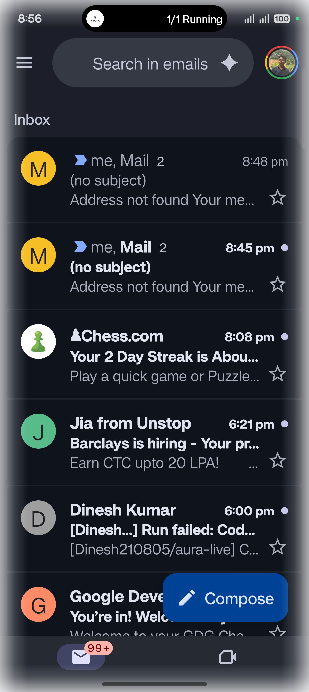

{
"text_length": 10,
"config": null
}[ "Open Gmail" ]

03-15 20:56:45.195 7218 14430 I VoiceCaptureController: 📋 Backend requested UI tree: request_id=2e6eae35, reason=Action: verify 03-15 20:56:45.197 7218 8908 D UITree : Found 2 windows 03-15 20:56:45.201 7218 8908 D UITree : Window: pkg=com.android.systemui, type=3, layer=1 03-15 20:56:45.205 7218 8908 D UITree : Window: pkg=com.google.android.gm, type=1, layer=0 03-15 20:56:45.206 7218 8908 D UITree : → Selected as target app window: com.google.android.gm 03-15 20:56:45.206 7218 8908 I UITree : Using window: com.google.android.gm 03-15 20:56:45.220 7218 8908 D UITree : UI tree validated: 23 elements, 100% valid bounds 03-15 20:56:45.222 7218 8908 I VoiceCaptureController: 📤 Sent UI tree response: request_id=2e6eae35, screen=1240x2772 03-15 20:56:45.250 7218 14430 I VoiceCaptureController: 📸 Backend requested screenshot: request_id=2e6eae35, reason=Action: verify 03-15 20:56:45.255 7218 8329 D Screenshot: MediaProjection status: available=true (projection=true, resources=true, permData=true) 03-15 20:56:45.257 7218 8329 D Screenshot: Captured image immediately 03-15 20:56:45.259 7218 8329 D Screenshot: Buffer: 14192640 bytes, rowStride=5120, pixelStride=4 03-15 20:56:45.269 7218 7218 D Screenshot: Buffer: 14192640 bytes, rowStride=5120, pixelStride=4 03-15 20:56:45.317 7218 8329 I Screenshot: Compressed bitmap: 262567 bytes (256 KB) 03-15 20:56:45.319 7218 8329 I Screenshot: Screenshot captured: 350092 chars (~341 KB) 03-15 20:56:45.319 7218 8329 D UITree : Found 2 windows 03-15 20:56:45.323 7218 7218 I Screenshot: Compressed bitmap: 262567 bytes (256 KB) 03-15 20:56:45.325 7218 8329 D UITree : Window: pkg=com.android.systemui, type=3, layer=1 03-15 20:56:45.325 7218 7218 I Screenshot: Screenshot captured: 350092 chars (~341 KB) 03-15 20:56:45.326 7218 7218 D UITree : Found 2 windows 03-15 20:56:45.329 7218 8329 D UITree : Window: pkg=com.google.android.gm, type=1, layer=0 03-15 20:56:45.329 7218 8329 D UITree : → Selected as target app window: com.google.android.gm 03-15 20:56:45.329 7218 8329 I UITree : Using window: com.google.android.gm 03-15 20:56:45.330 7218 8329 I Screenshot: Screenshot captured: 350092 chars 03-15 20:56:45.335 7218 7218 D UITree : Window: pkg=com.android.systemui, type=3, layer=1 03-15 20:56:45.337 7218 7218 D UITree : Window: pkg=com.google.android.gm, type=1, layer=0 03-15 20:56:45.337 7218 7218 D UITree : → Selected as target app window: com.google.android.gm 03-15 20:56:45.337 7218 7218 I UITree : Using window: com.google.android.gm 03-15 20:56:45.345 7218 7218 D Screenshot: Ignoring image available - no capture requested 03-15 20:56:45.346 7218 8329 I VoiceCaptureController: 📤 Sent screenshot response: request_id=2e6eae35, size=350092 bytes
{
"input_type": "text",
"command": "Open Gmail"
}{
"status": "completed",
"transcript": "Open Gmail",
"spoken_response": "Got it. Opening Gmail for you now."
}--------- beginning of main
03-15 20:54:22.428 7218 9158 D ColorModeChangeItem: preExecute mColorMode=0
03-15 20:54:22.439 7218 7218 I i.feature.debug: AssetManager2(0xb40000701e8f1628) locale list changing from [] to [en-IN]
--------- beginning of system
03-15 20:54:22.439 7218 7218 D ResourcesManagerExtImpl: applyConfigurationToAppResourcesLocked app.getDisplayId() return callback.displayId:0
03-15 20:54:22.449 7218 7218 E OplusPredictiveBackController: NoSuchMethodException
03-15 20:54:22.449 7218 7218 E OplusPredictiveBackController: NoSuchMethodException
03-15 20:54:22.449 7218 7218 D OplusPredictiveBackController: should not HookOnBackInvokedCallbackEnabled for application com.aura.aura_ui.MainActivity@edcf1f7 sdk: 36
03-15 20:54:22.449 7218 7218 D OplusPredictiveBackController: initPredictiveBackConfig for com.aura.aura_ui.MainActivity@edcf1f7 initPredictiveBackConfig mShouldInterceptKeyEvent false
03-15 20:54:22.449 7218 7218 D OplusPredictiveBackController: should not HookOnBackInvokedCallbackEnabled for application com.aura.aura_ui.MainActivity@edcf1f7 sdk: 36
03-15 20:54:22.449 7218 7218 D MainActivity: onCreate: Starting AURA UI
03-15 20:54:22.450 7218 7218 D MainActivity: Checking accessibility service status...
03-15 20:54:22.450 7218 7218 D MainActivity: Package name: com.aura.aura_ui.feature.debug
03-15 20:54:22.450 7218 7218 D MainActivity: Enabled services count: 2
03-15 20:54:22.450 7218 7218 D MainActivity: Found service: com.microsoft.appmanager/com.microsoft.mmx.screenmirroringsrc.accessibility.ScreenMirroringAccessibilityService
03-15 20:54:22.450 7218 7218 D MainActivity: Found service: com.aura.aura_ui.feature.debug/com.aura.aura_ui.accessibility.AuraAccessibilityService
03-15 20:54:22.450 7218 7218 I MainActivity: ✅ AURA Accessibility Service is enabled
03-15 20:54:22.452 7218 7218 I MainActivity: ✨ Visual feedback overlay service started
03-15 20:54:22.452 7218 7218 D MainActivity: Permissions - Audio: true, Internet: true, Overlay: true
03-15 20:54:22.452 7218 7218 I MainActivity: 🚀 Launching AURA as overlay
03-15 20:54:22.455 7218 7218 I MainActivity: 🎤 Wake word service started (was enabled)
03-15 20:54:22.456 7218 8244 I MainActivity: ✅ Using manual server configuration: http://100.78.51.4:8000
03-15 20:54:22.457 7218 8244 I Accessibility: Backend URL updated {url=http://100.78.51.4:8000}
03-15 20:54:22.457 7218 8244 I Accessibility: Backend URL updated {url=http://100.78.51.4:8000}
03-15 20:54:22.457 7218 8244 I Accessibility: All components updated with new backend URL {url=http://100.78.51.4:8000}
03-15 20:54:22.467 7218 7218 D ActivityClient: activity finished by caller: android.app.Activity.finish:7639 android.app.Activity.finish:7656 com.aura.aura_ui.MainActivity.launchAsOverlay:623 com.aura.aura_ui.MainActivity.onCreate:470 android.app.Activity.performCreate:9391 android.app.Activity.performCreate:9363 android.app.Instrumentation.callActivityOnCreate:1541 android.app.ActivityThread.performLaunchActivity:4604 android.app.ActivityThread.handleLaunchActivity:4827 android.app.servertransaction.LaunchActivityItem.execute:242
03-15 20:54:22.474 7218 7218 D ActivityThread: ComponentInfo{com.aura.aura_ui.feature.debug/com.aura.aura_ui.MainActivity} checkFinished=true 1
03-15 20:54:22.497 7218 7218 I AuraOverlayService: ✨ AuraOverlayService created
03-15 20:54:22.517 7218 7218 D AuraOverlayService: 📱 Android 36 detected - setting screen capture exclusion
03-15 20:54:22.518 7218 7218 D AuraOverlayService: 🎭 Overlay privateFlags: 0 -> 128 (screen capture exclusion set)
03-15 20:54:22.522 7218 7218 D WindowManager: Add to mViews: androidx.compose.ui.platform.ComposeView{f56aa7e V.E...... ......I. 0,0-0,0 alpha=1.0 viewInfo = },pkg= null
03-15 20:54:22.523 7218 8225 D skia : setRusSupported enable 0
03-15 20:54:22.535 7218 7443 I i.feature.debug: Waiting for a blocking GC ProfileSaver
03-15 20:54:22.550 7218 7218 D ViewRootImplExtImpl: onDisplayChanged -1 for VRI android.view.ViewRootImpl@4053af5
03-15 20:54:22.559 7218 7218 D AuraOverlayService: Wake lock acquired
03-15 20:54:22.560 7218 7443 I i.feature.debug: WaitForGcToComplete blocked ProfileSaver on CollectorTransition for 25.282ms
03-15 20:54:22.562 7218 8225 D HWUI : SkiaOpenGLPipeline::setSurface: this=0xb40000707bb744c0, surface=NULL
03-15 20:54:22.567 7218 7218 I AuraOverlayService: ✅ Overlay shown successfully
03-15 20:54:22.567 7218 7218 D WakeWordService: onStartCommand: action=com.aura.aura_ui.START_WAKE_WORD, isEnabled=true
03-15 20:54:22.567 7218 7218 D WakeWordService: Wake word already enabled - ensuring detection is running
03-15 20:54:22.567 7218 7218 D WakeWordService: Ensuring wake word running: isListening=false, mode=ACTIVE, detector=PorcupineWakeWordDetector
03-15 20:54:22.569 7218 7218 D ActivityThread: ComponentInfo{com.aura.aura_ui.feature.debug/com.aura.aura_ui.MainActivity} checkFinished=true 1
03-15 20:54:22.570 7218 7218 E OplusBracketLog: [OplusViewMirrorManager] updateHostViewRootIfNeeded, not support android.view.ViewRootImpl@4053af5
03-15 20:54:22.577 7218 7218 D Vibrator: SystemVibrator Created
03-15 20:54:22.622 7218 7218 D BufferQueueConsumer: [](id:1c3200000015,api:0,p:-1,c:7218) connect: controlledByApp=false
03-15 20:54:22.622 7218 7218 D BufferQueueConsumer: [VRI[]#20(BLAST Consumer)20](id:1c3200000015,api:0,p:-1,c:7218) setMaxAcquiredBufferCount: 2
03-15 20:54:22.623 7218 8225 D HWUI : createSurface new attribs array
03-15 20:54:22.623 7218 8225 D libEGL : this is from skia gles
03-15 20:54:22.623 7218 8225 D BufferQueueProducer: [VRI[]#20(BLAST Consumer)20](id:1c3200000015,api:1,p:7218,c:7218) connect: api=1 producerControlledByApp=true
03-15 20:54:22.629 7218 7218 I SurfaceControl: setExtendedRangeBrightness sc=Surface(name=)/@0x4c25949,currentBufferRatio=1.0,desiredRatio=1.0
03-15 20:54:22.637 7218 8225 D BLASTBufferQueue: [VRI[]#20](f:0,a:1) acquireNextBufferLocked size=1240x2772 mFrameNumber=1 applyTransaction=true mTimestamp=40003901899269(auto) mPendingTransactions.size=0 graphicBufferId=31001073942615 transform=0
03-15 20:54:22.637 7218 8225 D VRI[] : Received frameCommittedCallback lastAttemptedDrawFrameNum=1 didProduceBuffer=true syncBuffer=false
03-15 20:54:22.637 7218 7218 D VRI[] : draw finished. seqId=0
03-15 20:54:22.640 7218 7218 I AuraOverlayService: 🌟 Gemini Live mode — voice fully replaced by Gemini Live
03-15 20:54:22.642 7218 7218 I i.feature.debug: AssetManager2(0xb40000707bbf1c28) locale list changing from [] to [en-IN]
03-15 20:54:22.643 7218 7218 I TextToSpeech: Sucessfully bound to com.google.android.tts
03-15 20:54:22.663 7218 8225 D VRI[] : Received frameCommittedCallback lastAttemptedDrawFrameNum=3 didProduceBuffer=true syncBuffer=false
03-15 20:54:22.663 7218 7218 D VRI[] : draw finished. seqId=0
03-15 20:54:22.664 7218 7218 D VRI[] : onFocusEvent true
03-15 20:54:22.664 7218 8244 I MainActivity: Device registered with backend accessibility service
03-15 20:54:22.678 7218 7218 I MainActivity: ✅ Backend accessibility service connected
03-15 20:54:22.678 7218 7218 D MainActivity: Checking accessibility service status...
03-15 20:54:22.679 7218 7218 D MainActivity: Package name: com.aura.aura_ui.feature.debug
03-15 20:54:22.679 7218 7218 D MainActivity: Enabled services count: 2
03-15 20:54:22.679 7218 7218 D MainActivity: Found service: com.microsoft.appmanager/com.microsoft.mmx.screenmirroringsrc.accessibility.ScreenMirroringAccessibilityService
03-15 20:54:22.679 7218 7218 D MainActivity: Found service: com.aura.aura_ui.feature.debug/com.aura.aura_ui.accessibility.AuraAccessibilityService
03-15 20:54:22.679 7218 7218 I MainActivity: ✅ AURA Accessibility Service is enabled
03-15 20:54:22.679 7218 7218 I MainActivity: ✅ Using Commander-based on-demand UI capture
03-15 20:54:23.201 7218 7218 D ActivityThread: ComponentInfo{com.aura.aura_ui.feature.debug/com.aura.aura_ui.MainActivity} checkFinished=true 1
03-15 20:54:23.201 7218 7218 D MainActivity: Stopping voice listening
03-15 20:54:23.202 7218 7218 D MainActivity: Audio recording stopped successfully
03-15 20:54:23.202 7218 7218 W MainActivity: No audio data collected
03-15 20:54:23.202 7218 7218 D MainActivity: onDestroy: Activity destroyed
03-15 20:54:23.575 7218 8333 I TextToSpeech: Connected to TTS engine
03-15 20:54:23.670 7218 8256 D OplusScrollToTopManager: ,This androidx.compose.ui.platform.ComposeView{f56aa7e V.E...... ........ 0,0-1240,2772 aid=4 alpha=1.0 viewInfo = } change focus to true
03-15 20:54:23.844 7218 8448 I TextToSpeech: Setting up the connection to TTS engine...
03-15 20:54:23.891 7218 7218 I AuraTTSManager: TTS ready — 473 voices available
03-15 20:54:24.089 7218 13794 I VoiceCaptureController: ✅ WebSocket connected successfully
03-15 20:54:24.090 7218 7218 D ConversationViewModel: Starting conversation session: 5ccb71d6-e91e-45d6-bddb-d87f0a558061
03-15 20:54:24.090 7218 7218 D ConversationViewModel: Server connection changed: true
03-15 20:54:24.091 7218 7218 D Screenshot: MediaProjection status: available=true (projection=true, resources=true, permData=true)
03-15 20:54:24.092 7218 7218 I VoiceCaptureController: 📱 Sent device_info: 1240x2772, screen_capture=true
03-15 20:54:24.093 7218 7218 I AuraOverlayService: ✅ Gesture pipe /ws/conversation connected
03-15 20:54:24.100 7218 8244 I GeminiLiveCtrl: Connecting to Gemini Live: ws://100.78.51.4:8000/ws/live?session_id=b1251d40-4e42-423d-bb99-f828a231ee4c
03-15 20:54:24.102 7218 13794 D VoiceCaptureController: Conversation connected
03-15 20:54:24.149 7218 13794 W VoiceCaptureController: ⚠️ Unknown message type: device_info_ack
03-15 20:54:24.153 7218 13810 I GeminiLiveCtrl: ✅ Gemini Live WebSocket connected
03-15 20:54:24.154 7218 7218 I AuraOverlayService: ✅ GeminiLiveController connected — Gemini Live is the voice pipeline
03-15 20:54:34.234 7218 13794 W VoiceCaptureController: ⚠️ Unknown message type: heartbeat
03-15 20:54:44.159 7218 13794 W VoiceCaptureController: ⚠️ Unknown message type: heartbeat
03-15 20:54:49.199 7218 13810 V GeminiLiveCtrl: pong
03-15 20:54:54.225 7218 13794 W VoiceCaptureController: ⚠️ Unknown message type: heartbeat
03-15 20:55:04.183 7218 13794 W VoiceCaptureController: ⚠️ Unknown message type: heartbeat
03-15 20:55:14.192 7218 13794 W VoiceCaptureController: ⚠️ Unknown message type: heartbeat
03-15 20:55:14.196 7218 13810 V GeminiLiveCtrl: pong
03-15 20:55:18.741 7218 7218 E IJankManager: slideSceneEnd unknown scene 1000 mScene:-1
03-15 20:55:19.043 7218 7218 D ViewRootImplExtImpl: the up motion event handled by client, just return
03-15 20:55:19.480 7218 7218 E IJankManager: slideSceneEnd unknown scene 1000 mScene:-1
03-15 20:55:19.553 7218 7218 D ViewRootImplExtImpl: the up motion event handled by client, just return
03-15 20:55:20.615 7218 7218 D VRI[] : onFocusEvent false
03-15 20:55:20.618 7218 7218 W VRI[] : handleResized abandoned!
03-15 20:55:20.646 7218 7218 D Accessibility: Window changed: com.android.systemui, isAuraAppActive: false
03-15 20:55:20.655 7218 7218 D Accessibility: Window changed: com.android.systemui, isAuraAppActive: false
03-15 20:55:20.681 7218 7218 D Accessibility: Window changed: com.android.systemui, isAuraAppActive: false
03-15 20:55:21.624 7218 8256 D OplusScrollToTopManager: ,This androidx.compose.ui.platform.ComposeView{f56aa7e V.E...... ........ 0,0-1240,2772 aid=4 alpha=1.0 viewInfo = } change focus to false
03-15 20:55:23.665 7218 7218 D Accessibility: Window changed: com.android.systemui, isAuraAppActive: false
03-15 20:55:23.674 7218 7218 D VRI[] : onFocusEvent true
03-15 20:55:23.682 7218 7218 D InsetsController: hide(ime(), fromIme=false)
03-15 20:55:23.682 7218 7218 I ImeTracker: com.aura.aura_ui.feature.debug:d15306a4: onCancelled at PHASE_CLIENT_ALREADY_HIDDEN
03-15 20:55:24.179 7218 7218 E IJankManager: slideSceneEnd unknown scene 1000 mScene:-1
03-15 20:55:24.205 7218 13794 W VoiceCaptureController: ⚠️ Unknown message type: heartbeat
03-15 20:55:24.261 7218 7218 D ViewRootImplExtImpl: the up motion event handled by client, just return
03-15 20:55:24.681 7218 8256 D OplusScrollToTopManager: ,This androidx.compose.ui.platform.ComposeView{f56aa7e V.E...... .......D 0,0-1240,2772 aid=4 alpha=1.0 viewInfo = } change focus to true
03-15 20:55:24.805 7218 7218 D ViewRootImplExtImpl: the up motion event handled by client, just return
03-15 20:55:25.785 7218 7218 D ViewRootImplExtImpl: the up motion event handled by client, just return
03-15 20:55:26.267 7218 7218 D ViewRootImplExtImpl: the up motion event handled by client, just return
03-15 20:55:27.335 7218 7218 D ViewRootImplExtImpl: the up motion event handled by client, just return
03-15 20:55:27.986 7218 7218 D ViewRootImplExtImpl: the up motion event handled by client, just return
03-15 20:55:28.598 7218 7218 D ViewRootImplExtImpl: the up motion event handled by client, just return
03-15 20:55:29.550 7218 7218 D ViewRootImplExtImpl: the up motion event handled by client, just return
03-15 20:55:29.560 7218 7218 D HWUI : RenderProxy::destroy: this=0xb400007028e12500, mContext=0xb400007028edf140
03-15 20:55:29.560 7218 8225 D HWUI : SkiaOpenGLPipeline::setSurface: this=0xb4000070851909c0, surface=NULL
03-15 20:55:29.564 7218 8225 D BufferQueueProducer: [VRI[]#20(BLAST Consumer)20](id:1c3200000015,api:1,p:7218,c:7218) disconnect: api 1
03-15 20:55:29.565 7218 7218 D AudioManager: setMode mode=0 from com.aura.aura_ui.feature.debug
03-15 20:55:29.567 7218 7218 D ConversationViewModel: Phase transition: IDLE -> IDLE
03-15 20:55:29.567 7218 7218 D GeminiLiveCtrl: Gemini Live capture cancelled (session ended)
03-15 20:55:29.567 7218 7218 D GeminiLiveCtrl: GeminiLiveController cleaned up
03-15 20:55:29.569 7218 7218 D VoiceCaptureController: Controller cleanup complete
03-15 20:55:29.570 7218 7218 D AuraOverlayService: Wake lock released
03-15 20:55:29.575 7218 7218 I AuraOverlayService: Overlay hidden
03-15 20:55:29.581 7218 7218 D OplusScrollToTopManager: ,window dying
03-15 20:55:29.581 7218 7218 D OplusScrollToTopManager: ,unregisterSystemUIBroadcastReceiver
03-15 20:55:29.581 7218 7218 D OplusScrollToTopManager: , unregisterSystemUIBroadcastReceiver failed java.lang.IllegalArgumentException: Receiver not registered: android.view.OplusScrollToTopManager$2@8b110b1
03-15 20:55:29.583 7218 7310 I TextToSpeech: Disconnected from TTS engine
03-15 20:55:29.590 7218 7218 D BLASTBufferQueue: [VRI[]#20](f:0,a:1) destructor()
03-15 20:55:29.590 7218 7218 D BufferQueueConsumer: [VRI[]#20(BLAST Consumer)20](id:1c3200000015,api:0,p:-1,c:7218) disconnect
03-15 20:55:29.598 7218 7218 D ConversationViewModel: Server connection changed: false
03-15 20:55:29.598 7218 7218 I AuraOverlayService: AuraOverlayService destroyed
03-15 20:55:29.610 7218 13810 D GeminiLiveCtrl: WebSocket closing: Gemini Live controller cleanup
03-15 20:55:29.610 7218 13810 D GeminiLiveCtrl: WebSocket closed: Gemini Live controller cleanup
03-15 20:55:29.611 7218 13794 D VoiceCaptureController: WebSocket closing: Cleanup
03-15 20:55:31.424 7218 8512 D ColorModeChangeItem: preExecute mColorMode=0
03-15 20:55:31.435 7218 7218 I i.feature.debug: AssetManager2(0xb4000070294dd228) locale list changing from [] to [en-IN]
03-15 20:55:31.435 7218 7218 D ResourcesManagerExtImpl: applyConfigurationToAppResourcesLocked app.getDisplayId() return callback.displayId:0
03-15 20:55:31.441 7218 7218 E OplusPredictiveBackController: NoSuchMethodException
03-15 20:55:31.441 7218 7218 E OplusPredictiveBackController: NoSuchMethodException
03-15 20:55:31.442 7218 7218 D OplusPredictiveBackController: should not HookOnBackInvokedCallbackEnabled for application com.aura.aura_ui.MainActivity@3b68821 sdk: 36
03-15 20:55:31.442 7218 7218 D OplusPredictiveBackController: initPredictiveBackConfig for com.aura.aura_ui.MainActivity@3b68821 initPredictiveBackConfig mShouldInterceptKeyEvent false
03-15 20:55:31.442 7218 7218 D OplusPredictiveBackController: should not HookOnBackInvokedCallbackEnabled for application com.aura.aura_ui.MainActivity@3b68821 sdk: 36
03-15 20:55:31.442 7218 7218 D MainActivity: onCreate: Starting AURA UI
03-15 20:55:31.448 7218 7218 D MainActivity: Checking accessibility service status...
03-15 20:55:31.448 7218 7218 D MainActivity: Package name: com.aura.aura_ui.feature.debug
03-15 20:55:31.448 7218 7218 D MainActivity: Enabled services count: 2
03-15 20:55:31.448 7218 7218 D MainActivity: Found service: com.microsoft.appmanager/com.microsoft.mmx.screenmirroringsrc.accessibility.ScreenMirroringAccessibilityService
03-15 20:55:31.449 7218 7218 D MainActivity: Found service: com.aura.aura_ui.feature.debug/com.aura.aura_ui.accessibility.AuraAccessibilityService
03-15 20:55:31.449 7218 7218 I MainActivity: ✅ AURA Accessibility Service is enabled
03-15 20:55:31.450 7218 7218 I MainActivity: ✨ Visual feedback overlay service started
03-15 20:55:31.450 7218 7218 D MainActivity: Permissions - Audio: true, Internet: true, Overlay: true
03-15 20:55:31.450 7218 7218 I MainActivity: 🚀 Launching AURA as overlay
03-15 20:55:31.452 7218 7218 I MainActivity: 🎤 Wake word service started (was enabled)
03-15 20:55:31.453 7218 8244 I MainActivity: ✅ Using manual server configuration: http://100.78.51.4:8000
03-15 20:55:31.454 7218 8244 I Accessibility: Backend URL updated {url=http://100.78.51.4:8000}
03-15 20:55:31.455 7218 8244 I Accessibility: Backend URL updated {url=http://100.78.51.4:8000}
03-15 20:55:31.455 7218 8244 I Accessibility: All components updated with new backend URL {url=http://100.78.51.4:8000}
03-15 20:55:31.466 7218 7218 D ActivityClient: activity finished by caller: android.app.Activity.finish:7639 android.app.Activity.finish:7656 com.aura.aura_ui.MainActivity.launchAsOverlay:623 com.aura.aura_ui.MainActivity.onCreate:470 android.app.Activity.performCreate:9391 android.app.Activity.performCreate:9363 android.app.Instrumentation.callActivityOnCreate:1541 android.app.ActivityThread.performLaunchActivity:4604 android.app.ActivityThread.handleLaunchActivity:4827 android.app.servertransaction.LaunchActivityItem.execute:242
03-15 20:55:31.482 7218 7218 D ActivityThread: ComponentInfo{com.aura.aura_ui.feature.debug/com.aura.aura_ui.MainActivity} checkFinished=true 1
03-15 20:55:31.508 7218 7218 I AuraOverlayService: ✨ AuraOverlayService created
03-15 20:55:31.537 7218 7218 D AuraOverlayService: 📱 Android 36 detected - setting screen capture exclusion
03-15 20:55:31.537 7218 7218 D AuraOverlayService: 🎭 Overlay privateFlags: 0 -> 128 (screen capture exclusion set)
03-15 20:55:31.541 7218 7218 D WindowManager: Add to mViews: androidx.compose.ui.platform.ComposeView{fafd393 V.E...... ......I. 0,0-0,0 alpha=1.0 viewInfo = },pkg= null
03-15 20:55:31.542 7218 8225 D skia : setRusSupported enable 0
03-15 20:55:31.561 7218 7218 D ViewRootImplExtImpl: onDisplayChanged -1 for VRI android.view.ViewRootImpl@c7bb2ce
03-15 20:55:31.565 7218 7218 D AuraOverlayService: Wake lock acquired
03-15 20:55:31.572 7218 7218 I AuraOverlayService: ✅ Overlay shown successfully
03-15 20:55:31.572 7218 7218 D WakeWordService: onStartCommand: action=com.aura.aura_ui.START_WAKE_WORD, isEnabled=true
03-15 20:55:31.572 7218 7218 D WakeWordService: Wake word already enabled - ensuring detection is running
03-15 20:55:31.572 7218 7218 D WakeWordService: Ensuring wake word running: isListening=false, mode=ACTIVE, detector=PorcupineWakeWordDetector
03-15 20:55:31.579 7218 7218 D ActivityThread: ComponentInfo{com.aura.aura_ui.feature.debug/com.aura.aura_ui.MainActivity} checkFinished=true 1
03-15 20:55:31.581 7218 8225 D HWUI : SkiaOpenGLPipeline::setSurface: this=0xb4000070851909c0, surface=NULL
03-15 20:55:31.588 7218 8244 I MainActivity: Device registered with backend accessibility service
03-15 20:55:31.688 7218 7218 D Accessibility: WARNING: Could not access rootInActiveWindow after 3 attempts
03-15 20:55:31.689 7218 7218 E OplusBracketLog: [OplusViewMirrorManager] updateHostViewRootIfNeeded, not support android.view.ViewRootImpl@c7bb2ce
03-15 20:55:31.696 7218 7218 D Vibrator: SystemVibrator Created
03-15 20:55:31.743 7218 7218 D BufferQueueConsumer: [](id:1c3200000016,api:0,p:-1,c:7218) connect: controlledByApp=false
03-15 20:55:31.743 7218 7218 D BufferQueueConsumer: [VRI[]#21(BLAST Consumer)21](id:1c3200000016,api:0,p:-1,c:7218) setMaxAcquiredBufferCount: 2
03-15 20:55:31.747 7218 8225 D HWUI : createSurface new attribs array
03-15 20:55:31.747 7218 8225 D libEGL : this is from skia gles
03-15 20:55:31.747 7218 8225 D BufferQueueProducer: [VRI[]#21(BLAST Consumer)21](id:1c3200000016,api:1,p:7218,c:7218) connect: api=1 producerControlledByApp=true
03-15 20:55:31.755 7218 7218 I SurfaceControl: setExtendedRangeBrightness sc=Surface(name=)/@0x6bbafdd,currentBufferRatio=1.0,desiredRatio=1.0
03-15 20:55:31.771 7218 8225 D BLASTBufferQueue: [VRI[]#21](f:0,a:1) acquireNextBufferLocked size=1240x2772 mFrameNumber=1 applyTransaction=true mTimestamp=40073036431170(auto) mPendingTransactions.size=0 graphicBufferId=31001073942619 transform=0
03-15 20:55:31.771 7218 8225 D VRI[] : Received frameCommittedCallback lastAttemptedDrawFrameNum=1 didProduceBuffer=true syncBuffer=false
03-15 20:55:31.772 7218 7218 D VRI[] : draw finished. seqId=0
03-15 20:55:31.773 7218 7218 I AuraOverlayService: 🌟 Gemini Live mode — voice fully replaced by Gemini Live
03-15 20:55:31.780 7218 7218 I i.feature.debug: AssetManager2(0xb400007028e11f28) locale list changing from [] to [en-IN]
03-15 20:55:31.781 7218 7218 I TextToSpeech: Sucessfully bound to com.google.android.tts
03-15 20:55:31.781 7218 7218 I MainActivity: ✅ Backend accessibility service connected
03-15 20:55:31.783 7218 7218 D MainActivity: Checking accessibility service status...
03-15 20:55:31.783 7218 7218 D MainActivity: Package name: com.aura.aura_ui.feature.debug
03-15 20:55:31.783 7218 7218 D MainActivity: Enabled services count: 2
03-15 20:55:31.783 7218 7218 D MainActivity: Found service: com.microsoft.appmanager/com.microsoft.mmx.screenmirroringsrc.accessibility.ScreenMirroringAccessibilityService
03-15 20:55:31.783 7218 7218 D MainActivity: Found service: com.aura.aura_ui.feature.debug/com.aura.aura_ui.accessibility.AuraAccessibilityService
03-15 20:55:31.783 7218 7218 I MainActivity: ✅ AURA Accessibility Service is enabled
03-15 20:55:31.783 7218 7218 I MainActivity: ✅ Using Commander-based on-demand UI capture
03-15 20:55:31.794 7218 7218 D VRI[] : onFocusEvent true
03-15 20:55:31.809 7218 8225 D VRI[] : Received frameCommittedCallback lastAttemptedDrawFrameNum=3 didProduceBuffer=true syncBuffer=false
03-15 20:55:31.809 7218 7218 D VRI[] : draw finished. seqId=0
03-15 20:55:32.217 7218 7218 D ActivityThread: ComponentInfo{com.aura.aura_ui.feature.debug/com.aura.aura_ui.MainActivity} checkFinished=true 1
03-15 20:55:32.217 7218 7218 D MainActivity: Stopping voice listening
03-15 20:55:32.217 7218 7218 D MainActivity: Audio recording stopped successfully
03-15 20:55:32.217 7218 7218 W MainActivity: No audio data collected
03-15 20:55:32.217 7218 7218 D MainActivity: onDestroy: Activity destroyed
03-15 20:55:32.798 7218 8256 D OplusScrollToTopManager: ,This androidx.compose.ui.platform.ComposeView{fafd393 V.E...... ........ 0,0-1240,2772 aid=6 alpha=1.0 viewInfo = } change focus to true
03-15 20:55:32.834 7218 8512 I TextToSpeech: Connected to TTS engine
03-15 20:55:32.849 7218 7218 E IJankManager: slideSceneEnd unknown scene 1000 mScene:-1
03-15 20:55:32.957 7218 7218 D ViewRootImplExtImpl: the up motion event handled by client, just return
03-15 20:55:32.961 7218 7218 D HWUI : RenderProxy::destroy: this=0xb400006f45b05700, mContext=0xb400006f45b14240
03-15 20:55:32.961 7218 8225 D HWUI : SkiaOpenGLPipeline::setSurface: this=0xb400007028ef6100, surface=NULL
03-15 20:55:32.966 7218 8225 D BufferQueueProducer: [VRI[]#21(BLAST Consumer)21](id:1c3200000016,api:1,p:7218,c:7218) disconnect: api 1
03-15 20:55:32.967 7218 8244 E VoiceCaptureController: Connection error: StandaloneCoroutine was cancelled
03-15 20:55:32.967 7218 8244 E ConversationViewModel: Error: Failed to connect: StandaloneCoroutine was cancelled
03-15 20:55:33.039 7218 8448 I TextToSpeech: Setting up the connection to TTS engine...
03-15 20:55:33.039 7218 7218 W TextToSpeech: stop failed: TTS engine connection not fully set up
03-15 20:55:33.039 7218 7218 D VoiceCaptureController: Controller cleanup complete
03-15 20:55:33.040 7218 7218 D AuraOverlayService: Wake lock released
03-15 20:55:33.042 7218 7218 I AuraOverlayService: Overlay hidden
03-15 20:55:33.042 7218 7310 I TextToSpeech: Disconnected from TTS engine
03-15 20:55:33.049 7218 7218 D OplusScrollToTopManager: ,window dying
03-15 20:55:33.049 7218 7218 D OplusScrollToTopManager: ,unregisterSystemUIBroadcastReceiver
03-15 20:55:33.050 7218 7218 D OplusScrollToTopManager: , unregisterSystemUIBroadcastReceiver failed java.lang.IllegalArgumentException: Receiver not registered: android.view.OplusScrollToTopManager$2@f9ea6be
03-15 20:55:33.059 7218 7218 D BLASTBufferQueue: [VRI[]#21](f:0,a:1) destructor()
03-15 20:55:33.059 7218 7218 D BufferQueueConsumer: [VRI[]#21(BLAST Consumer)21](id:1c3200000016,api:0,p:-1,c:7218) disconnect
03-15 20:55:33.072 7218 7218 E AuraOverlayService: Error initializing voice controller
03-15 20:55:33.072 7218 7218 E AuraOverlayService: kotlinx.coroutines.JobCancellationException: StandaloneCoroutine was cancelled; job=StandaloneCoroutine{Cancelling}@c78c66c
03-15 20:55:33.074 7218 7218 I AuraOverlayService: AuraOverlayService destroyed
03-15 20:55:33.208 7218 14380 I VoiceCaptureController: ✅ WebSocket connected successfully
03-15 20:55:33.219 7218 14380 D VoiceCaptureController: Conversation connected
03-15 20:55:33.224 7218 14380 D VoiceCaptureController: WebSocket closing: Cleanup
03-15 20:55:34.261 7218 9928 D ColorModeChangeItem: preExecute mColorMode=0
03-15 20:55:34.271 7218 7218 D ResourcesManagerExtImpl: applyConfigurationToAppResourcesLocked app.getDisplayId() return callback.displayId:0
03-15 20:55:34.279 7218 7218 E OplusPredictiveBackController: NoSuchMethodException
03-15 20:55:34.279 7218 7218 E OplusPredictiveBackController: NoSuchMethodException
03-15 20:55:34.279 7218 7218 D OplusPredictiveBackController: should not HookOnBackInvokedCallbackEnabled for application com.aura.aura_ui.MainActivity@d203b6e sdk: 36
03-15 20:55:34.279 7218 7218 D OplusPredictiveBackController: initPredictiveBackConfig for com.aura.aura_ui.MainActivity@d203b6e initPredictiveBackConfig mShouldInterceptKeyEvent false
03-15 20:55:34.279 7218 7218 D OplusPredictiveBackController: should not HookOnBackInvokedCallbackEnabled for application com.aura.aura_ui.MainActivity@d203b6e sdk: 36
03-15 20:55:34.279 7218 7218 D MainActivity: onCreate: Starting AURA UI
03-15 20:55:34.282 7218 7218 D MainActivity: Checking accessibility service status...
03-15 20:55:34.282 7218 7218 D MainActivity: Package name: com.aura.aura_ui.feature.debug
03-15 20:55:34.282 7218 7218 D MainActivity: Enabled services count: 2
03-15 20:55:34.282 7218 7218 D MainActivity: Found service: com.microsoft.appmanager/com.microsoft.mmx.screenmirroringsrc.accessibility.ScreenMirroringAccessibilityService
03-15 20:55:34.282 7218 7218 D MainActivity: Found service: com.aura.aura_ui.feature.debug/com.aura.aura_ui.accessibility.AuraAccessibilityService
03-15 20:55:34.282 7218 7218 I MainActivity: ✅ AURA Accessibility Service is enabled
03-15 20:55:34.283 7218 7218 I MainActivity: ✨ Visual feedback overlay service started
03-15 20:55:34.283 7218 7218 D MainActivity: Permissions - Audio: true, Internet: true, Overlay: true
03-15 20:55:34.283 7218 7218 I MainActivity: 🚀 Launching AURA as overlay
03-15 20:55:34.287 7218 7218 I MainActivity: 🎤 Wake word service started (was enabled)
03-15 20:55:34.296 7218 7218 D ActivityClient: activity finished by caller: android.app.Activity.finish:7639 android.app.Activity.finish:7656 com.aura.aura_ui.MainActivity.launchAsOverlay:623 com.aura.aura_ui.MainActivity.onCreate:470 android.app.Activity.performCreate:9391 android.app.Activity.performCreate:9363 android.app.Instrumentation.callActivityOnCreate:1541 android.app.ActivityThread.performLaunchActivity:4604 android.app.ActivityThread.handleLaunchActivity:4827 android.app.servertransaction.LaunchActivityItem.execute:242
03-15 20:55:34.309 7218 7218 D ActivityThread: ComponentInfo{com.aura.aura_ui.feature.debug/com.aura.aura_ui.MainActivity} checkFinished=true 1
03-15 20:55:34.313 7218 8244 I MainActivity: ✅ Using manual server configuration: http://100.78.51.4:8000
03-15 20:55:34.314 7218 8244 I Accessibility: Backend URL updated {url=http://100.78.51.4:8000}
03-15 20:55:34.319 7218 8244 I Accessibility: Backend URL updated {url=http://100.78.51.4:8000}
03-15 20:55:34.319 7218 8244 I Accessibility: All components updated with new backend URL {url=http://100.78.51.4:8000}
03-15 20:55:34.326 7218 7218 I AuraOverlayService: ✨ AuraOverlayService created
03-15 20:55:34.345 7218 7218 D AuraOverlayService: 📱 Android 36 detected - setting screen capture exclusion
03-15 20:55:34.345 7218 7218 D AuraOverlayService: 🎭 Overlay privateFlags: 0 -> 128 (screen capture exclusion set)
03-15 20:55:34.349 7218 7218 D WindowManager: Add to mViews: androidx.compose.ui.platform.ComposeView{795115 V.E...... ......I. 0,0-0,0 alpha=1.0 viewInfo = },pkg= null
03-15 20:55:34.350 7218 8225 D skia : setRusSupported enable 0
03-15 20:55:34.362 7218 7218 D ViewRootImplExtImpl: onDisplayChanged -1 for VRI android.view.ViewRootImpl@b96e7b8
03-15 20:55:34.364 7218 7218 D AuraOverlayService: Wake lock acquired
03-15 20:55:34.366 7218 7218 I AuraOverlayService: ✅ Overlay shown successfully
03-15 20:55:34.366 7218 7218 D WakeWordService: onStartCommand: action=com.aura.aura_ui.START_WAKE_WORD, isEnabled=true
03-15 20:55:34.366 7218 7218 D WakeWordService: Wake word already enabled - ensuring detection is running
03-15 20:55:34.366 7218 7218 D WakeWordService: Ensuring wake word running: isListening=false, mode=ACTIVE, detector=PorcupineWakeWordDetector
03-15 20:55:34.368 7218 7218 D ActivityThread: ComponentInfo{com.aura.aura_ui.feature.debug/com.aura.aura_ui.MainActivity} checkFinished=true 1
03-15 20:55:34.370 7218 7218 E OplusBracketLog: [OplusViewMirrorManager] updateHostViewRootIfNeeded, not support android.view.ViewRootImpl@b96e7b8
03-15 20:55:34.378 7218 7218 D Vibrator: SystemVibrator Created
03-15 20:55:34.419 7218 7218 D BufferQueueConsumer: [](id:1c3200000017,api:0,p:-1,c:7218) connect: controlledByApp=false
03-15 20:55:34.420 7218 7218 D BufferQueueConsumer: [VRI[]#22(BLAST Consumer)22](id:1c3200000017,api:0,p:-1,c:7218) setMaxAcquiredBufferCount: 2
03-15 20:55:34.423 7218 8225 D HWUI : createSurface new attribs array
03-15 20:55:34.423 7218 8225 D libEGL : this is from skia gles
03-15 20:55:34.423 7218 8225 D BufferQueueProducer: [VRI[]#22(BLAST Consumer)22](id:1c3200000017,api:1,p:7218,c:7218) connect: api=1 producerControlledByApp=true
03-15 20:55:34.428 7218 7218 I SurfaceControl: setExtendedRangeBrightness sc=Surface(name=)/@0x8063bee,currentBufferRatio=1.0,desiredRatio=1.0
03-15 20:55:34.436 7218 8225 D BLASTBufferQueue: [VRI[]#22](f:0,a:1) acquireNextBufferLocked size=1240x2772 mFrameNumber=1 applyTransaction=true mTimestamp=40075701080231(auto) mPendingTransactions.size=0 graphicBufferId=31001073942623 transform=0
03-15 20:55:34.436 7218 8225 D VRI[] : Received frameCommittedCallback lastAttemptedDrawFrameNum=1 didProduceBuffer=true syncBuffer=false
03-15 20:55:34.436 7218 7218 D VRI[] : draw finished. seqId=0
03-15 20:55:34.437 7218 7218 I AuraOverlayService: 🌟 Gemini Live mode — voice fully replaced by Gemini Live
03-15 20:55:34.439 7218 7218 I TextToSpeech: Sucessfully bound to com.google.android.tts
03-15 20:55:34.455 7218 8225 D VRI[] : Received frameCommittedCallback lastAttemptedDrawFrameNum=3 didProduceBuffer=true syncBuffer=false
03-15 20:55:34.455 7218 7218 D VRI[] : draw finished. seqId=0
03-15 20:55:34.462 7218 7218 D VRI[] : onFocusEvent true
03-15 20:55:34.481 7218 8244 I MainActivity: Device registered with backend accessibility service
03-15 20:55:34.487 7218 7218 I MainActivity: ✅ Backend accessibility service connected
03-15 20:55:34.488 7218 7218 D MainActivity: Checking accessibility service status...
03-15 20:55:34.488 7218 7218 D MainActivity: Package name: com.aura.aura_ui.feature.debug
03-15 20:55:34.488 7218 7218 D MainActivity: Enabled services count: 2
03-15 20:55:34.488 7218 7218 D MainActivity: Found service: com.microsoft.appmanager/com.microsoft.mmx.screenmirroringsrc.accessibility.ScreenMirroringAccessibilityService
03-15 20:55:34.488 7218 7218 D MainActivity: Found service: com.aura.aura_ui.feature.debug/com.aura.aura_ui.accessibility.AuraAccessibilityService
03-15 20:55:34.488 7218 7218 I MainActivity: ✅ AURA Accessibility Service is enabled
03-15 20:55:34.488 7218 7218 I MainActivity: ✅ Using Commander-based on-demand UI capture
03-15 20:55:35.036 7218 7218 D ActivityThread: ComponentInfo{com.aura.aura_ui.feature.debug/com.aura.aura_ui.MainActivity} checkFinished=true 1
03-15 20:55:35.036 7218 7218 D MainActivity: Stopping voice listening
03-15 20:55:35.036 7218 7218 D MainActivity: Audio recording stopped successfully
03-15 20:55:35.036 7218 7218 W MainActivity: No audio data collected
03-15 20:55:35.036 7218 7218 D MainActivity: onDestroy: Activity destroyed
03-15 20:55:35.388 7218 8512 I TextToSpeech: Connected to TTS engine
03-15 20:55:35.469 7218 8256 D OplusScrollToTopManager: ,This androidx.compose.ui.platform.ComposeView{795115 V.E...... ........ 0,0-1240,2772 aid=8 alpha=1.0 viewInfo = } change focus to true
03-15 20:55:35.686 7218 8448 I TextToSpeech: Setting up the connection to TTS engine...
03-15 20:55:35.733 7218 7218 I AuraTTSManager: TTS ready — 473 voices available
03-15 20:55:35.777 7218 14430 I VoiceCaptureController: ✅ WebSocket connected successfully
03-15 20:55:35.783 7218 7218 D ConversationViewModel: Starting conversation session: a51ed98e-9f91-4859-86e3-0e2f1cf11b7c
03-15 20:55:35.783 7218 7218 D ConversationViewModel: Server connection changed: true
03-15 20:55:35.783 7218 7218 D Screenshot: MediaProjection status: available=true (projection=true, resources=true, permData=true)
03-15 20:55:35.784 7218 7218 I VoiceCaptureController: 📱 Sent device_info: 1240x2772, screen_capture=true
03-15 20:55:35.784 7218 7218 I AuraOverlayService: ✅ Gesture pipe /ws/conversation connected
03-15 20:55:35.799 7218 10044 I GeminiLiveCtrl: Connecting to Gemini Live: ws://100.78.51.4:8000/ws/live?session_id=e1890015-510c-4dee-89fa-fcd655be7709
03-15 20:55:35.811 7218 14430 D VoiceCaptureController: Conversation connected
03-15 20:55:35.859 7218 14430 W VoiceCaptureController: ⚠️ Unknown message type: device_info_ack
03-15 20:55:35.860 7218 14442 I GeminiLiveCtrl: ✅ Gemini Live WebSocket connected
03-15 20:55:35.863 7218 7218 I AuraOverlayService: ✅ GeminiLiveController connected — Gemini Live is the voice pipeline
03-15 20:55:43.890 7218 7218 E IJankManager: slideSceneEnd unknown scene 1000 mScene:-1
03-15 20:55:44.770 7218 7218 D ViewRootImplExtImpl: the up motion event handled by client, just return
03-15 20:55:45.219 7218 7218 E IJankManager: slideSceneEnd unknown scene 1000 mScene:-1
03-15 20:55:45.288 7218 7218 D ViewRootImplExtImpl: the up motion event handled by client, just return
03-15 20:55:45.919 7218 14430 W VoiceCaptureController: ⚠️ Unknown message type: heartbeat
03-15 20:55:46.109 7218 7218 D ViewRootImplExtImpl: the up motion event handled by client, just return
03-15 20:55:46.895 7218 7218 D ViewRootImplExtImpl: the up motion event handled by client, just return
03-15 20:55:47.789 7218 7218 D ViewRootImplExtImpl: the up motion event handled by client, just return
03-15 20:55:48.568 7218 7218 D ViewRootImplExtImpl: the up motion event handled by client, just return
03-15 20:55:49.137 7218 8225 D HWUI : SkiaOpenGLPipeline::setSurface: this=0xb400007028ef6100, surface=NULL
03-15 20:55:55.831 7218 14430 W VoiceCaptureController: ⚠️ Unknown message type: heartbeat
03-15 20:56:00.899 7218 14442 V GeminiLiveCtrl: pong
03-15 20:56:05.883 7218 14430 W VoiceCaptureController: ⚠️ Unknown message type: heartbeat
03-15 20:56:15.851 7218 14430 W VoiceCaptureController: ⚠️ Unknown message type: heartbeat
03-15 20:56:18.093 7218 7218 E IJankManager: slideSceneEnd unknown scene 1000 mScene:-1
03-15 20:56:18.148 7218 7218 D AudioManager: setMode mode=3 from com.aura.aura_ui.feature.debug
03-15 20:56:18.150 7218 7218 D AudioRecord: getMinFrameCount 640
03-15 20:56:18.150 7218 7218 D AudioRecordExtImpl: AudioRecordExtImpl init
03-15 20:56:18.151 7218 7218 D AudioRecordExtImpl: audiorecordTest
03-15 20:56:18.151 7218 7218 D AudioRecord: set(): inputSource 7, sampleRate 16000, format 0x1, channelMask 0x10, frameCount 1600, notificationFrames 0, sessionId 0, transferType 0, flags 0, attributionSource AttributionSourceState{pid: 7218, uid: 10551, deviceId: 0, packageName: com.aura.aura_ui.feature.debug, attributionTag: (null), token: binder:0xb400006f6b964d90, renouncedPermissions: [], next: []}uid -1, pid -1
03-15 20:56:18.152 7218 7218 D AudioRecord: set(): mSessionId 0
03-15 20:56:18.152 7218 7218 D AudioRecord: set(): 0xb40000702956ae00, Create AudioRecordThread, tid = 14643
03-15 20:56:18.152 7218 7218 D AudioRecordExtImpl: doSchedBoost, set audioapp task boost, pid=7218, tid=7218, enable=1, ret=0
03-15 20:56:18.229 7218 7218 I AudioRecord: openRecord_l: 0xb40000702956ae00, mCblk = 0x71720ad000
03-15 20:56:18.230 7218 7218 D AudioRecordExtImpl: doSchedBoost, set audioapp task boost, pid=7218, tid=7218, enable=0, ret=0
03-15 20:56:18.231 7218 7218 D android.media.AudioRecord: thirdPartyPlaybackCaptureSupported = false
03-15 20:56:18.231 7218 7218 I AudioEffect: queryNumberEffects(): *numEffects = 24, ret = 0
03-15 20:56:18.239 7218 7218 I AudioEffect: set 0xb400007028eef200 timeLow 7b491460
03-15 20:56:18.240 7218 7218 I AudioEffect: set() 0xb400007028eef200 OK effect: Acoustic Echo Canceler id: 1355 status 0 enabled 1 pid 7218
03-15 20:56:18.240 7218 7218 I GeminiLiveCtrl: ✅ AcousticEchoCanceler enabled — barge-in active (session 9785)
03-15 20:56:18.241 7218 7218 D AudioRecord: start(1392): sync event 0 trigger session 0
03-15 20:56:18.254 7218 7218 I AudioRecord: start(1392): return status 0
03-15 20:56:18.255 7218 7218 D ConversationViewModel: Phase transition: IDLE -> LISTENING
03-15 20:56:18.255 7218 7218 I GeminiLiveCtrl: 🎤 Gemini Live capture started (session active)
03-15 20:56:18.255 7218 7218 D ViewRootImplExtImpl: the up motion event handled by client, just return
03-15 20:56:18.280 7218 10044 D Screenshot: MediaProjection status: available=true (projection=true, resources=true, permData=true)
03-15 20:56:18.281 7218 10044 D Screenshot: Captured image immediately
03-15 20:56:18.282 7218 10044 D Screenshot: Buffer: 14192640 bytes, rowStride=5120, pixelStride=4
03-15 20:56:18.295 7218 7218 I AuraOverlayService: POST_PROMOTED_NOTIFICATIONS permission: GRANTED
03-15 20:56:18.297 7218 7218 I AuraOverlayService: canPostPromotedNotifications(): true
03-15 20:56:18.298 7218 7218 I AuraOverlayService: ✅ ProgressStyle: indeterminate=true
03-15 20:56:18.299 7218 7218 I AuraOverlayService: hasPromotableCharacteristics(): true
03-15 20:56:18.299 7218 7218 I AuraOverlayService: flags=0xa, ongoing=true, requestPromoted=true
03-15 20:56:18.299 7218 7218 I AuraOverlayService: title=AURA
03-15 20:56:18.299 7218 7218 I AuraOverlayService: shortCriticalText='Listening 🎤'
03-15 20:56:18.299 7218 7218 I AuraOverlayService: contentView=null, bigContentView=null, headsUpContentView=null
03-15 20:56:18.309 7218 7218 D Screenshot: Buffer: 14192640 bytes, rowStride=5120, pixelStride=4
03-15 20:56:18.358 7218 10044 I Screenshot: Compressed bitmap: 108334 bytes (105 KB)
03-15 20:56:18.358 7218 10044 I Screenshot: Screenshot captured: 144448 chars (~141 KB)
03-15 20:56:18.359 7218 10044 D UITree : Found 2 windows
03-15 20:56:18.359 7218 7218 I Screenshot: Compressed bitmap: 108295 bytes (105 KB)
03-15 20:56:18.360 7218 7218 I Screenshot: Screenshot captured: 144396 chars (~141 KB)
03-15 20:56:18.360 7218 7218 D UITree : Found 2 windows
03-15 20:56:18.383 7218 10044 D UITree : Window: pkg=com.android.systemui, type=3, layer=1
03-15 20:56:18.384 7218 7218 D UITree : Window: pkg=com.android.systemui, type=3, layer=1
03-15 20:56:18.385 7218 7218 D UITree : Window: pkg=com.aura.aura_ui.feature.debug, type=3, layer=0
03-15 20:56:18.385 7218 7218 D UITree : → Skipping AURA overlay window
03-15 20:56:18.430 7218 7295 I AudioEffect: Destructor 0xb400007028eef200
03-15 20:56:18.432 7218 7218 D Screenshot: Ignoring image available - no capture requested
03-15 20:56:18.433 7218 10044 D UITree : Window: pkg=com.aura.aura_ui.feature.debug, type=3, layer=0
03-15 20:56:18.433 7218 7218 W VRI[] : handleResized abandoned!
03-15 20:56:18.433 7218 10044 D UITree : → Skipping AURA overlay window
03-15 20:56:18.473 7218 10044 D UITree : Found 2 windows
03-15 20:56:18.476 7218 10044 D UITree : Window: pkg=com.android.systemui, type=3, layer=1
03-15 20:56:18.489 7218 10044 D UITree : Window: pkg=com.aura.aura_ui.feature.debug, type=3, layer=0
03-15 20:56:18.492 7218 10044 D UITree : → Skipping AURA overlay window
03-15 20:56:18.648 7218 7218 D Accessibility: Window changed: com.android.systemui, isAuraAppActive: false
03-15 20:56:19.796 7218 7218 D GeminiLiveCtrl: 🎤 Mic stays open during playback (AEC active, barge-in enabled)
03-15 20:56:19.799 7218 8244 I AudioTrack: set(): type=audio,case=1,attributes=1,content_type=1,usage=2,source=-1,flags=0x800
03-15 20:56:19.799 7218 8244 D AudioTrackExtImpl: AudioTrackExtImpl init
03-15 20:56:19.799 7218 8244 D AudioTrack: set(): streamType -1, sampleRate 24000, format 0x1, channelMask 0x1, frameCount 8192, flags #0, notificationFrames 0, sessionId 0, transferType 3, uid 10551, pid 7218
03-15 20:56:19.801 7218 8244 I AudioTrack: set(): 0xb4000070aba1de00, Create AudioTrackThread, tid = 14684
03-15 20:56:19.801 7218 8244 D AudioTrackExtImpl: doSchedBoost, set audioapp task boost, pid=7218, tid=8244, enable=1, ret=0
03-15 20:56:19.812 7218 8244 D AudioTrack: createTrack state 0 output.outputId=53
03-15 20:56:19.814 7218 8244 I AudioTrack: createTrack_l(1394) on outputId(53) : 0xb4000070aba1de00, mCblk = 0x7171d24000, mLatency = 381, mAfLatency = 40, frameCount = 8192, mSampleRate = 24000, mFlags = 0, mReqFrameCount = 8192, mNotificationFramesAct = 4096
03-15 20:56:19.814 7218 8244 D AudioTrackExtImpl: doSchedBoost, set audioapp task boost, pid=7218, tid=8244, enable=0, ret=0
03-15 20:56:19.815 7218 8244 E AudioTrackExtImpl: get fade type, but return null, pid 7218, uid 10551
03-15 20:56:19.815 7218 8244 D AudioTrack: set: pop_optimize mIsPopOptimizeSupport:0, mIsPopOptimizeFlush:0
03-15 20:56:19.823 7218 8244 D AudioTrack: start(1394): prior state:STATE_STOPPED output 53 stream 0 session 9793
03-15 20:56:19.881 7218 8244 D PcmStreamPlayer: PcmStreamPlayer started: 24000 Hz mono 16-bit, buffer=16384 bytes
03-15 20:56:19.890 7218 7218 D ConversationViewModel: Phase transition: LISTENING -> RESPONDING
03-15 20:56:19.891 7218 10044 D AudioTrackExtImpl: doSchedBoost, set audioapp task boost, pid=7218, tid=10044, enable=1, ret=0
03-15 20:56:19.913 7218 7218 I AuraOverlayService: POST_PROMOTED_NOTIFICATIONS permission: GRANTED
03-15 20:56:19.914 7218 7218 I AuraOverlayService: canPostPromotedNotifications(): true
03-15 20:56:19.914 7218 7218 I AuraOverlayService: ✅ ProgressStyle: indeterminate=true
03-15 20:56:19.915 7218 7218 I AuraOverlayService: hasPromotableCharacteristics(): true
03-15 20:56:19.915 7218 7218 I AuraOverlayService: flags=0xa, ongoing=true, requestPromoted=true
03-15 20:56:19.915 7218 7218 I AuraOverlayService: title=AURA
03-15 20:56:19.915 7218 7218 I AuraOverlayService: shortCriticalText='Speaking…'
03-15 20:56:19.915 7218 7218 I AuraOverlayService: contentView=null, bigContentView=null, headsUpContentView=null
03-15 20:56:20.751 7218 7218 D Accessibility: Window changed: com.android.systemui, isAuraAppActive: false
03-15 20:56:21.548 7218 8244 D Screenshot: MediaProjection status: available=true (projection=true, resources=true, permData=true)
03-15 20:56:21.552 7218 8244 D Screenshot: Captured image immediately
03-15 20:56:21.555 7218 8244 D Screenshot: Buffer: 14192640 bytes, rowStride=5120, pixelStride=4
03-15 20:56:21.572 7218 7218 D Screenshot: Buffer: 14192640 bytes, rowStride=5120, pixelStride=4
03-15 20:56:21.622 7218 8244 I Screenshot: Compressed bitmap: 117588 bytes (114 KB)
03-15 20:56:21.623 7218 8244 I Screenshot: Screenshot captured: 156784 chars (~153 KB)
03-15 20:56:21.625 7218 7218 I Screenshot: Compressed bitmap: 117475 bytes (114 KB)
03-15 20:56:21.625 7218 8244 D UITree : Found 2 windows
03-15 20:56:21.626 7218 7218 I Screenshot: Screenshot captured: 156636 chars (~152 KB)
03-15 20:56:21.626 7218 7218 D UITree : Found 2 windows
03-15 20:56:21.642 7218 7218 D UITree : Window: pkg=com.android.systemui, type=3, layer=1
03-15 20:56:21.642 7218 8244 D UITree : Window: pkg=com.android.systemui, type=3, layer=1
03-15 20:56:21.644 7218 7218 D UITree : Window: pkg=com.aura.aura_ui.feature.debug, type=3, layer=0
03-15 20:56:21.644 7218 7218 D UITree : → Skipping AURA overlay window
03-15 20:56:21.687 7218 7218 D Screenshot: Ignoring image available - no capture requested
03-15 20:56:21.688 7218 8244 D UITree : Window: pkg=com.aura.aura_ui.feature.debug, type=3, layer=0
03-15 20:56:21.688 7218 8244 D UITree : → Skipping AURA overlay window
03-15 20:56:23.331 7218 8908 D UITree : Found 2 windows
03-15 20:56:23.335 7218 8908 D UITree : Window: pkg=com.android.systemui, type=3, layer=1
03-15 20:56:23.348 7218 8908 D UITree : Window: pkg=com.aura.aura_ui.feature.debug, type=3, layer=0
03-15 20:56:23.348 7218 8908 D UITree : → Skipping AURA overlay window
03-15 20:56:25.020 7218 8243 D Screenshot: MediaProjection status: available=true (projection=true, resources=true, permData=true)
03-15 20:56:25.021 7218 8243 D Screenshot: Captured image immediately
03-15 20:56:25.025 7218 8243 D Screenshot: Buffer: 14192640 bytes, rowStride=5120, pixelStride=4
03-15 20:56:25.033 7218 7218 D Screenshot: Buffer: 14192640 bytes, rowStride=5120, pixelStride=4
03-15 20:56:25.087 7218 8243 I Screenshot: Compressed bitmap: 115081 bytes (112 KB)
03-15 20:56:25.088 7218 7218 I Screenshot: Compressed bitmap: 115028 bytes (112 KB)
03-15 20:56:25.089 7218 7218 I Screenshot: Screenshot captured: 153372 chars (~149 KB)
03-15 20:56:25.089 7218 8243 I Screenshot: Screenshot captured: 153444 chars (~149 KB)
03-15 20:56:25.090 7218 7218 D UITree : Found 2 windows
03-15 20:56:25.090 7218 8243 D UITree : Found 2 windows
03-15 20:56:25.095 7218 7218 D UITree : Window: pkg=com.android.systemui, type=3, layer=1
03-15 20:56:25.095 7218 8243 D UITree : Window: pkg=com.android.systemui, type=3, layer=1
03-15 20:56:25.096 7218 7218 D UITree : Window: pkg=com.aura.aura_ui.feature.debug, type=3, layer=0
03-15 20:56:25.096 7218 7218 D UITree : → Skipping AURA overlay window
03-15 20:56:25.139 7218 7218 D Screenshot: Ignoring image available - no capture requested
03-15 20:56:25.141 7218 8243 D UITree : Window: pkg=com.aura.aura_ui.feature.debug, type=3, layer=0
03-15 20:56:25.141 7218 8243 D UITree : → Skipping AURA overlay window
03-15 20:56:25.892 7218 14430 W VoiceCaptureController: ⚠️ Unknown message type: heartbeat
03-15 20:56:25.901 7218 14442 V GeminiLiveCtrl: pong
03-15 20:56:28.204 7218 8329 D Screenshot: MediaProjection status: available=true (projection=true, resources=true, permData=true)
03-15 20:56:28.204 7218 8329 D Screenshot: Captured image immediately
03-15 20:56:28.209 7218 8329 D Screenshot: Buffer: 14192640 bytes, rowStride=5120, pixelStride=4
03-15 20:56:28.226 7218 7218 D Screenshot: Buffer: 14192640 bytes, rowStride=5120, pixelStride=4
03-15 20:56:28.277 7218 7218 I Screenshot: Compressed bitmap: 114838 bytes (112 KB)
03-15 20:56:28.278 7218 7218 I Screenshot: Screenshot captured: 153120 chars (~149 KB)
03-15 20:56:28.279 7218 7218 D UITree : Found 2 windows
03-15 20:56:28.282 7218 7218 D UITree : Window: pkg=com.android.systemui, type=3, layer=1
03-15 20:56:28.283 7218 7218 D UITree : Window: pkg=com.aura.aura_ui.feature.debug, type=3, layer=0
03-15 20:56:28.283 7218 7218 D UITree : → Skipping AURA overlay window
03-15 20:56:28.289 7218 8329 I Screenshot: Compressed bitmap: 114807 bytes (112 KB)
03-15 20:56:28.290 7218 8329 I Screenshot: Screenshot captured: 153076 chars (~149 KB)
03-15 20:56:28.290 7218 8329 D UITree : Found 2 windows
03-15 20:56:28.293 7218 8329 D UITree : Window: pkg=com.android.systemui, type=3, layer=1
03-15 20:56:28.323 7218 7218 D Screenshot: Ignoring image available - no capture requested
03-15 20:56:28.324 7218 8329 D UITree : Window: pkg=com.aura.aura_ui.feature.debug, type=3, layer=0
03-15 20:56:28.324 7218 8329 D UITree : → Skipping AURA overlay window
03-15 20:56:28.858 7218 8329 D UITree : Found 2 windows
03-15 20:56:28.864 7218 8329 D UITree : Window: pkg=com.android.systemui, type=3, layer=1
03-15 20:56:28.884 7218 8329 D UITree : Window: pkg=com.aura.aura_ui.feature.debug, type=3, layer=0
03-15 20:56:28.885 7218 8329 D UITree : → Skipping AURA overlay window
03-15 20:56:31.541 7218 8908 D Screenshot: MediaProjection status: available=true (projection=true, resources=true, permData=true)
03-15 20:56:31.543 7218 8908 D Screenshot: Captured image immediately
03-15 20:56:31.544 7218 8908 D Screenshot: Buffer: 14192640 bytes, rowStride=5120, pixelStride=4
03-15 20:56:31.568 7218 7218 D Screenshot: Buffer: 14192640 bytes, rowStride=5120, pixelStride=4
03-15 20:56:31.611 7218 8908 I Screenshot: Compressed bitmap: 115068 bytes (112 KB)
03-15 20:56:31.613 7218 8908 I Screenshot: Screenshot captured: 153424 chars (~149 KB)
03-15 20:56:31.613 7218 8908 D UITree : Found 2 windows
03-15 20:56:31.618 7218 7218 I Screenshot: Compressed bitmap: 115083 bytes (112 KB)
03-15 20:56:31.619 7218 7218 I Screenshot: Screenshot captured: 153444 chars (~149 KB)
03-15 20:56:31.620 7218 7218 D UITree : Found 2 windows
03-15 20:56:31.623 7218 7218 D UITree : Window: pkg=com.android.systemui, type=3, layer=1
03-15 20:56:31.623 7218 8908 D UITree : Window: pkg=com.android.systemui, type=3, layer=1
03-15 20:56:31.625 7218 7218 D UITree : Window: pkg=com.aura.aura_ui.feature.debug, type=3, layer=0
03-15 20:56:31.625 7218 7218 D UITree : → Skipping AURA overlay window
03-15 20:56:31.659 7218 7218 D Screenshot: Ignoring image available - no capture requested
03-15 20:56:31.660 7218 8908 D UITree : Window: pkg=com.aura.aura_ui.feature.debug, type=3, layer=0
03-15 20:56:31.660 7218 8908 D UITree : → Skipping AURA overlay window
03-15 20:56:34.212 7218 8243 D UITree : Found 2 windows
03-15 20:56:34.218 7218 8243 D UITree : Window: pkg=com.android.systemui, type=3, layer=1
03-15 20:56:34.237 7218 8243 D UITree : Window: pkg=com.aura.aura_ui.feature.debug, type=3, layer=0
03-15 20:56:34.238 7218 8243 D UITree : → Skipping AURA overlay window
03-15 20:56:34.924 7218 7218 I GeminiLiveCtrl: 🗣️ Barge-in detected — interrupting AI playback immediately
03-15 20:56:34.924 7218 7218 D AudioTrack: [oplusAudioFade]stop mState STATE_ACTIVE, mIsTrackSupportFade 1
03-15 20:56:34.924 7218 7218 D AudioTrack: stop(1394): prior state:STATE_ACTIVE output 53 stream 0 session 9793
03-15 20:56:34.924 7218 7218 D AudioTrack: stop(1394): called with 960 frames delivered
03-15 20:56:34.927 7218 7218 I AudioTrack: stop(1394): 0xb4000070aba1de00 stop done
03-15 20:56:34.928 7218 7218 D AudioTrack: flush+ mIsStopFlush 0, mIsTrackSupportFade 1, mTrackFadeSupportType 0 , mShareBuffer != 0 ? 0, mState 1
03-15 20:56:34.928 7218 7218 D AudioTrack: flush(1394): prior state:STATE_STOPPED
03-15 20:56:34.928 7218 7218 D AudioTrack: [oplusAudioFade]stop mState STATE_FLUSHED, mIsTrackSupportFade 1
03-15 20:56:34.928 7218 7218 D AudioTrack: stop(1394): prior state:STATE_FLUSHED output 53 stream 0 session 9793
03-15 20:56:34.928 7218 7218 D AudioTrack: ~AudioTrack(1394), releasing mStatus =0 session id 9793 from 7218 on behalf of 7218
03-15 20:56:34.928 7218 7218 D AudioTrack: [oplusAudioFade]stop mState STATE_FLUSHED, mIsTrackSupportFade 1
03-15 20:56:34.928 7218 7218 D AudioTrack: stop(1394): prior state:STATE_FLUSHED output 53 stream 0 session 9793
03-15 20:56:34.928 7218 7218 I AudioTrack: stopAndJoinCallbacks(1394) done
03-15 20:56:34.929 7218 7218 D PcmStreamPlayer: PcmStreamPlayer stopped
03-15 20:56:34.929 7218 7218 D ConversationViewModel: Phase transition: RESPONDING -> LISTENING
03-15 20:56:34.931 7218 7218 I AuraOverlayService: POST_PROMOTED_NOTIFICATIONS permission: GRANTED
03-15 20:56:34.932 7218 7218 I AuraOverlayService: canPostPromotedNotifications(): true
03-15 20:56:34.932 7218 7218 I AuraOverlayService: ✅ ProgressStyle: indeterminate=true
03-15 20:56:34.933 7218 7218 I AuraOverlayService: hasPromotableCharacteristics(): true
03-15 20:56:34.933 7218 7218 I AuraOverlayService: flags=0xa, ongoing=true, requestPromoted=true
03-15 20:56:34.933 7218 7218 I AuraOverlayService: title=AURA
03-15 20:56:34.933 7218 7218 I AuraOverlayService: shortCriticalText='Listening 🎤'
03-15 20:56:34.933 7218 7218 I AuraOverlayService: contentView=null, bigContentView=null, headsUpContentView=null
03-15 20:56:34.941 7218 10044 D Screenshot: MediaProjection status: available=true (projection=true, resources=true, permData=true)
03-15 20:56:34.941 7218 10044 D Screenshot: Captured image immediately
03-15 20:56:34.944 7218 10044 D Screenshot: Buffer: 14192640 bytes, rowStride=5120, pixelStride=4
03-15 20:56:34.972 7218 7218 D Screenshot: Buffer: 14192640 bytes, rowStride=5120, pixelStride=4
03-15 20:56:35.009 7218 10044 I Screenshot: Compressed bitmap: 115141 bytes (112 KB)
03-15 20:56:35.010 7218 10044 I Screenshot: Screenshot captured: 153524 chars (~149 KB)
03-15 20:56:35.012 7218 10044 D UITree : Found 2 windows
03-15 20:56:35.020 7218 10044 D UITree : Window: pkg=com.android.systemui, type=3, layer=1
03-15 20:56:35.022 7218 7218 I Screenshot: Compressed bitmap: 115162 bytes (112 KB)
03-15 20:56:35.023 7218 7218 I Screenshot: Screenshot captured: 153552 chars (~149 KB)
03-15 20:56:35.023 7218 7218 D UITree : Found 2 windows
03-15 20:56:35.028 7218 7218 D UITree : Window: pkg=com.android.systemui, type=3, layer=1
03-15 20:56:35.029 7218 7218 D UITree : Window: pkg=com.aura.aura_ui.feature.debug, type=3, layer=0
03-15 20:56:35.029 7218 7218 D UITree : → Skipping AURA overlay window
03-15 20:56:35.065 7218 7218 D GeminiLiveCtrl: 🎤 Mic stays open during playback (AEC active, barge-in enabled)
03-15 20:56:35.072 7218 8908 I AudioTrack: set(): type=audio,case=1,attributes=1,content_type=1,usage=2,source=-1,flags=0x800
03-15 20:56:35.073 7218 8908 D AudioTrackExtImpl: AudioTrackExtImpl init
03-15 20:56:35.073 7218 8908 D AudioTrack: set(): streamType -1, sampleRate 24000, format 0x1, channelMask 0x1, frameCount 8192, flags #0, notificationFrames 0, sessionId 0, transferType 3, uid 10551, pid 7218
03-15 20:56:35.074 7218 8908 I AudioTrack: set(): 0xb4000070aba1d200, Create AudioTrackThread, tid = 14881
03-15 20:56:35.075 7218 8908 D AudioTrackExtImpl: doSchedBoost, set audioapp task boost, pid=7218, tid=8908, enable=1, ret=0
03-15 20:56:35.082 7218 7218 D Screenshot: Ignoring image available - no capture requested
03-15 20:56:35.083 7218 7218 D ConversationViewModel: User message added: hear me
03-15 20:56:35.083 7218 10044 D UITree : Window: pkg=com.aura.aura_ui.feature.debug, type=3, layer=0
03-15 20:56:35.083 7218 10044 D UITree : → Skipping AURA overlay window
03-15 20:56:35.096 7218 8908 D AudioTrack: createTrack state 0 output.outputId=53
03-15 20:56:35.099 7218 8908 I AudioTrack: createTrack_l(1395) on outputId(53) : 0xb4000070aba1d200, mCblk = 0x7171d24000, mLatency = 381, mAfLatency = 40, frameCount = 8192, mSampleRate = 24000, mFlags = 0, mReqFrameCount = 8192, mNotificationFramesAct = 4096
03-15 20:56:35.100 7218 8908 D AudioTrackExtImpl: doSchedBoost, set audioapp task boost, pid=7218, tid=8908, enable=0, ret=0
03-15 20:56:35.101 7218 8908 E AudioTrackExtImpl: get fade type, but return null, pid 7218, uid 10551
03-15 20:56:35.101 7218 8908 D AudioTrack: set: pop_optimize mIsPopOptimizeSupport:0, mIsPopOptimizeFlush:0
03-15 20:56:35.106 7218 8908 D AudioTrack: start(1395): prior state:STATE_STOPPED output 53 stream 0 session 9801
03-15 20:56:35.108 7218 7218 I AuraOverlayService: POST_PROMOTED_NOTIFICATIONS permission: GRANTED
03-15 20:56:35.109 7218 7218 I AuraOverlayService: canPostPromotedNotifications(): true
03-15 20:56:35.109 7218 7218 I AuraOverlayService: ✅ ProgressStyle: indeterminate=true
03-15 20:56:35.110 7218 7218 I AuraOverlayService: hasPromotableCharacteristics(): true
03-15 20:56:35.110 7218 7218 I AuraOverlayService: flags=0xa, ongoing=true, requestPromoted=true
03-15 20:56:35.110 7218 7218 I AuraOverlayService: title=AURA
03-15 20:56:35.110 7218 7218 I AuraOverlayService: shortCriticalText='Listening 🎤'
03-15 20:56:35.110 7218 7218 I AuraOverlayService: contentView=null, bigContentView=null, headsUpContentView=null
03-15 20:56:35.154 7218 8908 D PcmStreamPlayer: PcmStreamPlayer started: 24000 Hz mono 16-bit, buffer=16384 bytes
03-15 20:56:35.159 7218 7218 D ConversationViewModel: Phase transition: LISTENING -> RESPONDING
03-15 20:56:35.160 7218 8908 D AudioTrackExtImpl: doSchedBoost, set audioapp task boost, pid=7218, tid=8908, enable=1, ret=0
03-15 20:56:35.160 7218 7218 I AuraOverlayService: POST_PROMOTED_NOTIFICATIONS permission: GRANTED
03-15 20:56:35.161 7218 7218 I AuraOverlayService: canPostPromotedNotifications(): true
03-15 20:56:35.161 7218 7218 I AuraOverlayService: ✅ ProgressStyle: indeterminate=true
03-15 20:56:35.162 7218 7218 I AuraOverlayService: hasPromotableCharacteristics(): true
03-15 20:56:35.162 7218 7218 I AuraOverlayService: flags=0xa, ongoing=true, requestPromoted=true
03-15 20:56:35.162 7218 7218 I AuraOverlayService: title=AURA
03-15 20:56:35.162 7218 7218 I AuraOverlayService: shortCriticalText='Speaking…'
03-15 20:56:35.162 7218 7218 I AuraOverlayService: contentView=null, bigContentView=null, headsUpContentView=null
03-15 20:56:35.975 7218 14430 W VoiceCaptureController: ⚠️ Unknown message type: heartbeat
03-15 20:56:38.274 7218 8242 D Screenshot: MediaProjection status: available=true (projection=true, resources=true, permData=true)
03-15 20:56:38.276 7218 8242 D Screenshot: Captured image immediately
03-15 20:56:38.281 7218 8242 D Screenshot: Buffer: 14192640 bytes, rowStride=5120, pixelStride=4
03-15 20:56:38.288 7218 7218 D Screenshot: Buffer: 14192640 bytes, rowStride=5120, pixelStride=4
03-15 20:56:38.340 7218 7218 I Screenshot: Compressed bitmap: 105086 bytes (102 KB)
03-15 20:56:38.341 7218 7218 I Screenshot: Screenshot captured: 140116 chars (~136 KB)
03-15 20:56:38.342 7218 7218 D UITree : Found 2 windows
03-15 20:56:38.346 7218 7218 D UITree : Window: pkg=com.android.systemui, type=3, layer=1
03-15 20:56:38.347 7218 7218 D UITree : Window: pkg=com.aura.aura_ui.feature.debug, type=3, layer=0
03-15 20:56:38.347 7218 7218 D UITree : → Skipping AURA overlay window
03-15 20:56:38.349 7218 8242 I Screenshot: Compressed bitmap: 105086 bytes (102 KB)
03-15 20:56:38.350 7218 8242 I Screenshot: Screenshot captured: 140116 chars (~136 KB)
03-15 20:56:38.350 7218 8242 D UITree : Found 2 windows
03-15 20:56:38.354 7218 8242 D UITree : Window: pkg=com.android.systemui, type=3, layer=1
03-15 20:56:38.391 7218 7218 D Screenshot: Ignoring image available - no capture requested
03-15 20:56:38.392 7218 8242 D UITree : Window: pkg=com.aura.aura_ui.feature.debug, type=3, layer=0
03-15 20:56:38.392 7218 8242 D UITree : → Skipping AURA overlay window
03-15 20:56:39.495 7218 8908 D UITree : Found 2 windows
03-15 20:56:39.499 7218 8908 D UITree : Window: pkg=com.android.systemui, type=3, layer=1
03-15 20:56:39.512 7218 8908 D UITree : Window: pkg=com.aura.aura_ui.feature.debug, type=3, layer=0
03-15 20:56:39.513 7218 8908 D UITree : → Skipping AURA overlay window
03-15 20:56:40.540 7218 14430 D VoiceCaptureController: 🤖 Agent status: Commander → Parsing: 'Open Gmail...'
03-15 20:56:40.546 7218 7218 D ConversationViewModel: Agent output: Commander → Parsing: 'Open Gmail...'
03-15 20:56:40.547 7218 7218 I AuraOverlayService: 🔄 Verb changed: 'Working' → 'Parsing' (agent=Commander)
03-15 20:56:40.547 7218 7218 I AuraOverlayService: 💠 pushLiveUpdate: chip='Parsing', status='Commander: Parsing: 'Open Gmail...''
03-15 20:56:40.548 7218 7218 I AuraOverlayService: POST_PROMOTED_NOTIFICATIONS permission: GRANTED
03-15 20:56:40.549 7218 7218 I AuraOverlayService: canPostPromotedNotifications(): true
03-15 20:56:40.549 7218 7218 I AuraOverlayService: ✅ ProgressStyle: indeterminate=true
03-15 20:56:40.550 7218 7218 I AuraOverlayService: hasPromotableCharacteristics(): true
03-15 20:56:40.550 7218 7218 I AuraOverlayService: flags=0xa, ongoing=true, requestPromoted=true
03-15 20:56:40.550 7218 7218 I AuraOverlayService: title=AURA
03-15 20:56:40.550 7218 7218 I AuraOverlayService: shortCriticalText='Parsing'
03-15 20:56:40.550 7218 7218 I AuraOverlayService: contentView=null, bigContentView=null, headsUpContentView=null
03-15 20:56:40.959 7218 14430 I VoiceCaptureController: 📋 Backend requested UI tree: request_id=dabfcb24, reason=Action: verify
03-15 20:56:40.962 7218 8908 D UITree : Found 2 windows
03-15 20:56:40.965 7218 8908 D UITree : Window: pkg=com.android.systemui, type=3, layer=1
03-15 20:56:40.981 7218 8908 D UITree : Window: pkg=com.aura.aura_ui.feature.debug, type=3, layer=0
03-15 20:56:40.982 7218 8908 D UITree : → Skipping AURA overlay window
03-15 20:56:41.018 7218 14430 D VoiceCaptureController: 🤖 Agent status: Planner → Planning: Open Gmail
03-15 20:56:41.019 7218 14430 D VoiceCaptureController: 🤖 Agent status: Planner → Plan ready: 1 phases
03-15 20:56:41.020 7218 14430 I VoiceCaptureController: 📋 Task progress: 1/1 - Open Gmail
03-15 20:56:41.028 7218 7218 D ConversationViewModel: Agent output: Planner → Planning: Open Gmail
03-15 20:56:41.028 7218 7218 I AuraOverlayService: 🔄 Verb changed: 'Parsing' → 'Planning' (agent=Planner)
03-15 20:56:41.029 7218 7218 I AuraOverlayService: 💠 pushLiveUpdate: chip='Planning', status='Planner: Planning: Open Gmail'
03-15 20:56:41.029 7218 7218 D ConversationViewModel: Agent output: Planner → Plan ready: 1 phases
03-15 20:56:41.029 7218 7218 D AuraOverlayService: Verb unchanged: 'Planning' (agent=Planner)
03-15 20:56:41.029 7218 7218 I AuraOverlayService: 💠 pushLiveUpdate: chip='Planning', status='Planner: Plan ready: 1 phases'
03-15 20:56:41.029 7218 7218 I AuraOverlayService: 📊 Progress update: verb='Planning', step=1/1
03-15 20:56:41.029 7218 7218 I AuraOverlayService: 💠 pushLiveUpdate: chip='1/1 Planning', status='Planning: step 1 of 1'
03-15 20:56:41.031 7218 7218 I AuraOverlayService: POST_PROMOTED_NOTIFICATIONS permission: GRANTED
03-15 20:56:41.031 7218 7218 I AuraOverlayService: canPostPromotedNotifications(): true
03-15 20:56:41.032 7218 7218 I AuraOverlayService: ✅ ProgressStyle: progress=100 (from 1/1)
03-15 20:56:41.032 7218 7218 I AuraOverlayService: hasPromotableCharacteristics(): true
03-15 20:56:41.032 7218 7218 I AuraOverlayService: flags=0xa, ongoing=true, requestPromoted=true
03-15 20:56:41.032 7218 7218 I AuraOverlayService: title=AURA — Open Gmail
03-15 20:56:41.032 7218 7218 I AuraOverlayService: shortCriticalText='1/1 Planning'
03-15 20:56:41.032 7218 7218 I AuraOverlayService: contentView=null, bigContentView=null, headsUpContentView=null
03-15 20:56:41.256 7218 8908 D UITree : UI tree validated: 30 elements, 100% valid bounds
03-15 20:56:41.257 7218 8908 I VoiceCaptureController: 📤 Sent UI tree response: request_id=dabfcb24, screen=1240x2772
03-15 20:56:41.348 7218 8908 D Screenshot: MediaProjection status: available=true (projection=true, resources=true, permData=true)
03-15 20:56:41.349 7218 8908 D Screenshot: Captured image immediately
03-15 20:56:41.355 7218 8908 D Screenshot: Buffer: 14192640 bytes, rowStride=5120, pixelStride=4
03-15 20:56:41.362 7218 7218 D Screenshot: Buffer: 14192640 bytes, rowStride=5120, pixelStride=4
03-15 20:56:41.408 7218 14430 I VoiceCaptureController: 📸 Backend requested screenshot: request_id=dabfcb24, reason=Action: verify
03-15 20:56:41.411 7218 8242 D Screenshot: MediaProjection status: available=true (projection=true, resources=true, permData=true)
03-15 20:56:41.412 7218 7218 I Screenshot: Compressed bitmap: 112761 bytes (110 KB)
03-15 20:56:41.412 7218 8242 W Screenshot: Could not acquire image immediately: maxImages (2) has already been acquired, call #close before acquiring more.
03-15 20:56:41.413 7218 7218 I Screenshot: Screenshot captured: 150348 chars (~146 KB)
03-15 20:56:41.414 7218 7218 D UITree : Found 2 windows
03-15 20:56:41.423 7218 7218 D UITree : Window: pkg=com.android.systemui, type=3, layer=1
03-15 20:56:41.424 7218 7218 D UITree : Window: pkg=com.aura.aura_ui.feature.debug, type=3, layer=0
03-15 20:56:41.424 7218 7218 D UITree : → Skipping AURA overlay window
03-15 20:56:41.433 7218 8908 I Screenshot: Compressed bitmap: 112687 bytes (110 KB)
03-15 20:56:41.434 7218 8908 I Screenshot: Screenshot captured: 150252 chars (~146 KB)
03-15 20:56:41.435 7218 8908 D UITree : Found 2 windows
03-15 20:56:41.437 7218 8908 D UITree : Window: pkg=com.android.systemui, type=3, layer=1
03-15 20:56:41.440 7218 8242 I Screenshot: Screenshot captured: 150348 chars
03-15 20:56:41.448 7218 7218 D Screenshot: Ignoring image available - no capture requested
03-15 20:56:41.449 7218 8908 D UITree : Window: pkg=com.aura.aura_ui.feature.debug, type=3, layer=0
03-15 20:56:41.449 7218 8908 D UITree : → Skipping AURA overlay window
03-15 20:56:41.460 7218 8242 I VoiceCaptureController: 📤 Sent screenshot response: request_id=dabfcb24, size=150348 bytes
03-15 20:56:41.594 7218 14430 I VoiceCaptureController: 📋 Backend requested UI tree: request_id=651561f0, reason=Action: verify
03-15 20:56:41.596 7218 8242 D UITree : Found 2 windows
03-15 20:56:41.609 7218 14430 D VoiceCaptureController: 🤖 Agent status: Aura → [1/1] Open Gmail
03-15 20:56:41.609 7218 7218 D ConversationViewModel: Agent output: Aura → [1/1] Open Gmail
03-15 20:56:41.610 7218 7218 I AuraOverlayService: 🔄 Verb changed: 'Planning' → 'Running' (agent=Aura)
03-15 20:56:41.610 7218 7218 I AuraOverlayService: 💠 pushLiveUpdate: chip='1/1 Running', status='Aura: [1/1] Open Gmail'
03-15 20:56:41.612 7218 8242 D UITree : Window: pkg=com.android.systemui, type=3, layer=1
03-15 20:56:41.613 7218 7218 I AuraOverlayService: POST_PROMOTED_NOTIFICATIONS permission: GRANTED
03-15 20:56:41.613 7218 7218 I AuraOverlayService: canPostPromotedNotifications(): true
03-15 20:56:41.614 7218 7218 I AuraOverlayService: ✅ ProgressStyle: progress=100 (from 1/1)
03-15 20:56:41.615 7218 7218 I AuraOverlayService: hasPromotableCharacteristics(): true
03-15 20:56:41.615 7218 7218 I AuraOverlayService: flags=0xa, ongoing=true, requestPromoted=true
03-15 20:56:41.615 7218 7218 I AuraOverlayService: title=AURA — Open Gmail
03-15 20:56:41.615 7218 7218 I AuraOverlayService: shortCriticalText='1/1 Running'
03-15 20:56:41.615 7218 7218 I AuraOverlayService: contentView=null, bigContentView=null, headsUpContentView=null
03-15 20:56:41.627 7218 8242 D UITree : Window: pkg=com.aura.aura_ui.feature.debug, type=3, layer=0
03-15 20:56:41.627 7218 8242 D UITree : → Skipping AURA overlay window
03-15 20:56:41.857 7218 8242 D UITree : UI tree validated: 30 elements, 100% valid bounds
03-15 20:56:41.864 7218 8242 I VoiceCaptureController: 📤 Sent UI tree response: request_id=651561f0, screen=1240x2772
03-15 20:56:41.918 7218 14430 I VoiceCaptureController: 📸 Backend requested screenshot: request_id=651561f0, reason=Action: verify
03-15 20:56:41.921 7218 8242 D Screenshot: MediaProjection status: available=true (projection=true, resources=true, permData=true)
03-15 20:56:41.922 7218 8242 D Screenshot: Captured image immediately
03-15 20:56:41.926 7218 8242 D Screenshot: Buffer: 14192640 bytes, rowStride=5120, pixelStride=4
03-15 20:56:41.944 7218 7218 D Screenshot: Buffer: 14192640 bytes, rowStride=5120, pixelStride=4
03-15 20:56:41.991 7218 7218 I Screenshot: Compressed bitmap: 112338 bytes (109 KB)
03-15 20:56:41.992 7218 7218 I Screenshot: Screenshot captured: 149784 chars (~146 KB)
03-15 20:56:41.993 7218 7218 D UITree : Found 2 windows
03-15 20:56:41.997 7218 7218 D UITree : Window: pkg=com.android.systemui, type=3, layer=1
03-15 20:56:42.000 7218 7218 D UITree : Window: pkg=com.aura.aura_ui.feature.debug, type=3, layer=0
03-15 20:56:42.000 7218 7218 D UITree : → Skipping AURA overlay window
03-15 20:56:42.004 7218 8242 I Screenshot: Compressed bitmap: 112312 bytes (109 KB)
03-15 20:56:42.005 7218 8242 I Screenshot: Screenshot captured: 149752 chars (~146 KB)
03-15 20:56:42.006 7218 8242 D UITree : Found 2 windows
03-15 20:56:42.008 7218 8242 D UITree : Window: pkg=com.android.systemui, type=3, layer=1
03-15 20:56:42.027 7218 7218 D Screenshot: Ignoring image available - no capture requested
03-15 20:56:42.028 7218 8242 D UITree : Window: pkg=com.aura.aura_ui.feature.debug, type=3, layer=0
03-15 20:56:42.028 7218 8242 D UITree : → Skipping AURA overlay window
03-15 20:56:42.060 7218 8242 I Screenshot: Screenshot captured: 149784 chars
03-15 20:56:42.067 7218 8242 I VoiceCaptureController: 📤 Sent screenshot response: request_id=651561f0, size=149784 bytes
03-15 20:56:42.164 7218 14430 I VoiceCaptureController: 🚀 Launch app received: package=com.google.android.gm, commandId=59247cbe
03-15 20:56:42.176 7218 7218 I AuraOverlayService: POST_PROMOTED_NOTIFICATIONS permission: GRANTED
03-15 20:56:42.177 7218 7218 I AuraOverlayService: canPostPromotedNotifications(): true
03-15 20:56:42.177 7218 7218 I AuraOverlayService: ✅ ProgressStyle: indeterminate=true
03-15 20:56:42.178 7218 7218 I AuraOverlayService: hasPromotableCharacteristics(): true
03-15 20:56:42.178 7218 7218 I AuraOverlayService: flags=0xa, ongoing=true, requestPromoted=true
03-15 20:56:42.178 7218 7218 I AuraOverlayService: title=AURA — Open Gmail
03-15 20:56:42.178 7218 7218 I AuraOverlayService: shortCriticalText='1/1 Running'
03-15 20:56:42.178 7218 7218 I AuraOverlayService: contentView=null, bigContentView=null, headsUpContentView=null
03-15 20:56:42.179 7218 7218 I AuraOverlayService: 🔽 Overlay minimized for automation (with notification)
03-15 20:56:42.180 7218 8243 I CommandExecutor: ⚙️ Executing: launch_app (59247cbe)
03-15 20:56:42.208 7218 8243 I CommandExecutor: ✅ Launched app: com.google.android.gm
03-15 20:56:42.208 7218 8243 I VoiceCaptureController: ✅ App launched: com.google.android.gm
03-15 20:56:42.208 7218 8243 I VoiceCaptureController: 📤 Sent command result: launch_app, success=true
03-15 20:56:42.467 7218 7218 D WindowManager: Add to mViews: com.aura.aura_ui.overlay.AuraOverlayService$EdgeGlowCanvasView{24bc33f V.ED..... ......ID 0,0-0,0 alpha=1.0 viewInfo = },pkg= null
03-15 20:56:42.467 7218 8225 D skia : setRusSupported enable 0
03-15 20:56:42.472 7218 7218 D ViewRootImplExtImpl: onDisplayChanged -1 for VRI android.view.ViewRootImpl@fba776a
03-15 20:56:42.473 7218 7218 I AuraOverlayService: ✨ Edge glow shown (1240x2772)
03-15 20:56:42.474 7218 7218 D HWUI : RenderProxy::destroy: this=0xb400007029738a00, mContext=0xb400006f45b584c0
03-15 20:56:42.474 7218 8225 D HWUI : SkiaOpenGLPipeline::setSurface: this=0xb40000707bb74240, surface=NULL
03-15 20:56:42.474 7218 8225 D BufferQueueProducer: [VRI[]#22(BLAST Consumer)22](id:1c3200000017,api:1,p:7218,c:7218) disconnect: api 1
03-15 20:56:42.491 7218 7218 D BLASTBufferQueue: [VRI[]#22](f:0,a:2) destructor()
03-15 20:56:42.491 7218 7218 D BufferQueueConsumer: [VRI[]#22(BLAST Consumer)22](id:1c3200000017,api:0,p:-1,c:7218) disconnect
03-15 20:56:42.494 7218 7218 E OplusBracketLog: [OplusViewMirrorManager] updateHostViewRootIfNeeded, not support android.view.ViewRootImpl@fba776a
03-15 20:56:42.508 7218 7218 D BufferQueueConsumer: [](id:1c3200000018,api:0,p:-1,c:7218) connect: controlledByApp=false
03-15 20:56:42.508 7218 7218 D BufferQueueConsumer: [VRI[]#23(BLAST Consumer)23](id:1c3200000018,api:0,p:-1,c:7218) setMaxAcquiredBufferCount: 2
03-15 20:56:42.511 7218 8225 D HWUI : createSurface new attribs array
03-15 20:56:42.511 7218 8225 D libEGL : this is from skia gles
03-15 20:56:42.511 7218 8225 D BufferQueueProducer: [VRI[]#23(BLAST Consumer)23](id:1c3200000018,api:1,p:7218,c:7218) connect: api=1 producerControlledByApp=true
03-15 20:56:42.537 7218 7218 I SurfaceControl: setExtendedRangeBrightness sc=Surface(name=)/@0xb80a036,currentBufferRatio=1.0,desiredRatio=1.0
03-15 20:56:42.541 7218 8225 D BLASTBufferQueue: [VRI[]#23](f:0,a:1) acquireNextBufferLocked size=1240x2772 mFrameNumber=1 applyTransaction=true mTimestamp=40143807315414(auto) mPendingTransactions.size=0 graphicBufferId=31001073942627 transform=0
03-15 20:56:42.542 7218 8225 D VRI[] : Received frameCommittedCallback lastAttemptedDrawFrameNum=1 didProduceBuffer=true syncBuffer=false
03-15 20:56:42.553 7218 7218 D VRI[] : draw finished. seqId=0
03-15 20:56:42.555 7218 7218 D VRI[] : onFocusEvent false
03-15 20:56:43.577 7218 8256 D OplusScrollToTopManager: ,This androidx.compose.ui.platform.ComposeView{795115 G.E...... ......ID 0,0-1240,2772 aid=8 alpha=1.0 viewInfo = } change focus to false
03-15 20:56:44.528 7218 10044 D Screenshot: MediaProjection status: available=true (projection=true, resources=true, permData=true)
03-15 20:56:44.528 7218 10044 D Screenshot: Captured image immediately
03-15 20:56:44.531 7218 10044 D Screenshot: Buffer: 14192640 bytes, rowStride=5120, pixelStride=4
03-15 20:56:44.536 7218 7218 D Screenshot: Buffer: 14192640 bytes, rowStride=5120, pixelStride=4
03-15 20:56:44.575 7218 7218 I Screenshot: Compressed bitmap: 263033 bytes (256 KB)
03-15 20:56:44.576 7218 7218 I Screenshot: Screenshot captured: 350712 chars (~342 KB)
03-15 20:56:44.577 7218 7218 D UITree : Found 2 windows
03-15 20:56:44.579 7218 7218 D UITree : Window: pkg=com.android.systemui, type=3, layer=1
03-15 20:56:44.582 7218 7218 D UITree : Window: pkg=com.google.android.gm, type=1, layer=0
03-15 20:56:44.582 7218 7218 D UITree : → Selected as target app window: com.google.android.gm
03-15 20:56:44.582 7218 7218 I UITree : Using window: com.google.android.gm
03-15 20:56:44.590 7218 10044 I Screenshot: Compressed bitmap: 263033 bytes (256 KB)
03-15 20:56:44.592 7218 10044 I Screenshot: Screenshot captured: 350712 chars (~342 KB)
03-15 20:56:44.593 7218 10044 D UITree : Found 2 windows
03-15 20:56:44.594 7218 10044 D UITree : Window: pkg=com.android.systemui, type=3, layer=1
03-15 20:56:44.598 7218 10044 D UITree : Window: pkg=com.google.android.gm, type=1, layer=0
03-15 20:56:44.598 7218 10044 D UITree : → Selected as target app window: com.google.android.gm
03-15 20:56:44.598 7218 10044 I UITree : Using window: com.google.android.gm
03-15 20:56:44.649 7218 7218 D Screenshot: Ignoring image available - no capture requested
03-15 20:56:44.649 7218 10044 D UITree : Found 2 windows
03-15 20:56:44.660 7218 10044 D UITree : Window: pkg=com.android.systemui, type=3, layer=1
03-15 20:56:44.663 7218 10044 D UITree : Window: pkg=com.google.android.gm, type=1, layer=0
03-15 20:56:44.663 7218 10044 D UITree : → Selected as target app window: com.google.android.gm
03-15 20:56:44.663 7218 10044 I UITree : Using window: com.google.android.gm
03-15 20:56:45.195 7218 14430 I VoiceCaptureController: 📋 Backend requested UI tree: request_id=2e6eae35, reason=Action: verify
03-15 20:56:45.197 7218 8908 D UITree : Found 2 windows
03-15 20:56:45.201 7218 8908 D UITree : Window: pkg=com.android.systemui, type=3, layer=1
03-15 20:56:45.205 7218 8908 D UITree : Window: pkg=com.google.android.gm, type=1, layer=0
03-15 20:56:45.206 7218 8908 D UITree : → Selected as target app window: com.google.android.gm
03-15 20:56:45.206 7218 8908 I UITree : Using window: com.google.android.gm
03-15 20:56:45.220 7218 8908 D UITree : UI tree validated: 23 elements, 100% valid bounds
03-15 20:56:45.222 7218 8908 I VoiceCaptureController: 📤 Sent UI tree response: request_id=2e6eae35, screen=1240x2772
03-15 20:56:45.250 7218 14430 I VoiceCaptureController: 📸 Backend requested screenshot: request_id=2e6eae35, reason=Action: verify
03-15 20:56:45.255 7218 8329 D Screenshot: MediaProjection status: available=true (projection=true, resources=true, permData=true)
03-15 20:56:45.257 7218 8329 D Screenshot: Captured image immediately
03-15 20:56:45.259 7218 8329 D Screenshot: Buffer: 14192640 bytes, rowStride=5120, pixelStride=4
03-15 20:56:45.269 7218 7218 D Screenshot: Buffer: 14192640 bytes, rowStride=5120, pixelStride=4
03-15 20:56:45.317 7218 8329 I Screenshot: Compressed bitmap: 262567 bytes (256 KB)
03-15 20:56:45.319 7218 8329 I Screenshot: Screenshot captured: 350092 chars (~341 KB)
03-15 20:56:45.319 7218 8329 D UITree : Found 2 windows
03-15 20:56:45.323 7218 7218 I Screenshot: Compressed bitmap: 262567 bytes (256 KB)
03-15 20:56:45.325 7218 8329 D UITree : Window: pkg=com.android.systemui, type=3, layer=1
03-15 20:56:45.325 7218 7218 I Screenshot: Screenshot captured: 350092 chars (~341 KB)
03-15 20:56:45.326 7218 7218 D UITree : Found 2 windows
03-15 20:56:45.329 7218 8329 D UITree : Window: pkg=com.google.android.gm, type=1, layer=0
03-15 20:56:45.329 7218 8329 D UITree : → Selected as target app window: com.google.android.gm
03-15 20:56:45.329 7218 8329 I UITree : Using window: com.google.android.gm
03-15 20:56:45.330 7218 8329 I Screenshot: Screenshot captured: 350092 chars
03-15 20:56:45.335 7218 7218 D UITree : Window: pkg=com.android.systemui, type=3, layer=1
03-15 20:56:45.337 7218 7218 D UITree : Window: pkg=com.google.android.gm, type=1, layer=0
03-15 20:56:45.337 7218 7218 D UITree : → Selected as target app window: com.google.android.gm
03-15 20:56:45.337 7218 7218 I UITree : Using window: com.google.android.gm
03-15 20:56:45.345 7218 7218 D Screenshot: Ignoring image available - no capture requested
03-15 20:56:45.346 7218 8329 I VoiceCaptureController: 📤 Sent screenshot response: request_id=2e6eae35, size=350092 bytes
03-15 20:56:47.673 7218 8908 D Screenshot: MediaProjection status: available=true (projection=true, resources=true, permData=true)
03-15 20:56:47.676 7218 8908 D Screenshot: Captured image immediately
03-15 20:56:47.679 7218 8908 D Screenshot: Buffer: 14192640 bytes, rowStride=5120, pixelStride=4
03-15 20:56:47.690 7218 7218 D Screenshot: Buffer: 14192640 bytes, rowStride=5120, pixelStride=4
03-15 20:56:47.731 7218 8908 I Screenshot: Compressed bitmap: 258737 bytes (252 KB)
03-15 20:56:47.733 7218 8908 I Screenshot: Screenshot captured: 344984 chars (~336 KB)
03-15 20:56:47.733 7218 8908 D UITree : Found 2 windows
03-15 20:56:47.735 7218 8908 D UITree : Window: pkg=com.android.systemui, type=3, layer=1
03-15 20:56:47.738 7218 8908 D UITree : Window: pkg=com.google.android.gm, type=1, layer=0
03-15 20:56:47.738 7218 8908 D UITree : → Selected as target app window: com.google.android.gm
03-15 20:56:47.738 7218 8908 I UITree : Using window: com.google.android.gm
03-15 20:56:47.746 7218 7218 I Screenshot: Compressed bitmap: 258737 bytes (252 KB)
03-15 20:56:47.748 7218 7218 I Screenshot: Screenshot captured: 344984 chars (~336 KB)
03-15 20:56:47.748 7218 7218 D UITree : Found 2 windows
03-15 20:56:47.751 7218 7218 D UITree : Window: pkg=com.android.systemui, type=3, layer=1
03-15 20:56:47.754 7218 7218 D UITree : Window: pkg=com.google.android.gm, type=1, layer=0
03-15 20:56:47.754 7218 7218 D UITree : → Selected as target app window: com.google.android.gm
03-15 20:56:47.754 7218 7218 I UITree : Using window: com.google.android.gm
03-15 20:56:47.761 7218 7218 D Screenshot: Ignoring image available - no capture requested
03-15 20:56:48.863 7218 14430 I VoiceCaptureController: 📋 Backend requested UI tree: request_id=0158c701, reason=Action: verify
03-15 20:56:48.863 7218 8243 D UITree : Found 2 windows
03-15 20:56:48.867 7218 8243 D UITree : Window: pkg=com.android.systemui, type=3, layer=1
03-15 20:56:48.873 7218 8243 D UITree : Window: pkg=com.google.android.gm, type=1, layer=0
03-15 20:56:48.873 7218 8243 D UITree : → Selected as target app window: com.google.android.gm
03-15 20:56:48.874 7218 8243 I UITree : Using window: com.google.android.gm
03-15 20:56:48.880 7218 8243 D UITree : UI tree validated: 23 elements, 100% valid bounds
03-15 20:56:48.884 7218 8243 I VoiceCaptureController: 📤 Sent UI tree response: request_id=0158c701, screen=1240x2772
03-15 20:56:48.907 7218 14430 I VoiceCaptureController: 📸 Backend requested screenshot: request_id=0158c701, reason=Action: verify
03-15 20:56:48.909 7218 8243 D Screenshot: MediaProjection status: available=true (projection=true, resources=true, permData=true)
03-15 20:56:48.911 7218 8243 D Screenshot: Captured image immediately
03-15 20:56:48.914 7218 8243 D Screenshot: Buffer: 14192640 bytes, rowStride=5120, pixelStride=4
03-15 20:56:48.920 7218 7218 D Screenshot: Buffer: 14192640 bytes, rowStride=5120, pixelStride=4
03-15 20:56:48.969 7218 8243 I Screenshot: Compressed bitmap: 262989 bytes (256 KB)
03-15 20:56:48.971 7218 8243 I Screenshot: Screenshot captured: 350652 chars (~342 KB)
03-15 20:56:48.971 7218 8243 D UITree : Found 2 windows
03-15 20:56:48.975 7218 8243 D UITree : Window: pkg=com.android.systemui, type=3, layer=1
03-15 20:56:48.975 7218 7218 I Screenshot: Compressed bitmap: 262989 bytes (256 KB)
03-15 20:56:48.977 7218 7218 I Screenshot: Screenshot captured: 350652 chars (~342 KB)
03-15 20:56:48.978 7218 7218 D UITree : Found 2 windows
03-15 20:56:48.978 7218 8243 D UITree : Window: pkg=com.google.android.gm, type=1, layer=0
03-15 20:56:48.978 7218 8243 D UITree : → Selected as target app window: com.google.android.gm
03-15 20:56:48.978 7218 8243 I UITree : Using window: com.google.android.gm
03-15 20:56:48.980 7218 8243 I Screenshot: Screenshot captured: 350652 chars
03-15 20:56:48.980 7218 7218 D UITree : Window: pkg=com.android.systemui, type=3, layer=1
03-15 20:56:48.983 7218 7218 D UITree : Window: pkg=com.google.android.gm, type=1, layer=0
03-15 20:56:48.983 7218 7218 D UITree : → Selected as target app window: com.google.android.gm
03-15 20:56:48.983 7218 7218 I UITree : Using window: com.google.android.gm
03-15 20:56:48.992 7218 8243 I VoiceCaptureController: 📤 Sent screenshot response: request_id=0158c701, size=350652 bytes
03-15 20:56:48.995 7218 7218 D Screenshot: Ignoring image available - no capture requested
03-15 20:56:49.195 7218 14430 I VoiceCaptureController: 📋 Task progress: 2/1 - Open Gmail
03-15 20:56:49.198 7218 7218 I AuraOverlayService: POST_PROMOTED_NOTIFICATIONS permission: GRANTED
03-15 20:56:49.199 7218 7218 I AuraOverlayService: canPostPromotedNotifications(): true
03-15 20:56:49.199 7218 7218 I AuraOverlayService: ✅ ProgressStyle: progress=100 (from 1/1)
03-15 20:56:49.200 7218 7218 I AuraOverlayService: hasPromotableCharacteristics(): true
03-15 20:56:49.200 7218 7218 I AuraOverlayService: flags=0xa, ongoing=true, requestPromoted=true
03-15 20:56:49.200 7218 7218 I AuraOverlayService: title=AURA — Open Gmail
03-15 20:56:49.200 7218 7218 I AuraOverlayService: shortCriticalText='Done ✓'
03-15 20:56:49.200 7218 7218 I AuraOverlayService: contentView=null, bigContentView=null, headsUpContentView=null
03-15 20:56:49.755 7218 8242 D UITree : Found 2 windows
03-15 20:56:49.761 7218 8242 D UITree : Window: pkg=com.android.systemui, type=3, layer=1
03-15 20:56:49.764 7218 8242 D UITree : Window: pkg=com.google.android.gm, type=1, layer=0
03-15 20:56:49.765 7218 8242 D UITree : → Selected as target app window: com.google.android.gm
03-15 20:56:49.765 7218 8242 I UITree : Using window: com.google.android.gm
03-15 20:56:50.776 7218 8242 D Screenshot: MediaProjection status: available=true (projection=true, resources=true, permData=true)
03-15 20:56:50.777 7218 8242 D Screenshot: Captured image immediately
03-15 20:56:50.781 7218 8242 D Screenshot: Buffer: 14192640 bytes, rowStride=5120, pixelStride=4
03-15 20:56:50.783 7218 7218 D Screenshot: Buffer: 14192640 bytes, rowStride=5120, pixelStride=4
03-15 20:56:50.840 7218 7218 I Screenshot: Compressed bitmap: 256745 bytes (250 KB)
03-15 20:56:50.842 7218 7218 I Screenshot: Screenshot captured: 342328 chars (~334 KB)
03-15 20:56:50.843 7218 7218 D UITree : Found 2 windows
03-15 20:56:50.844 7218 8242 I Screenshot: Compressed bitmap: 256745 bytes (250 KB)
03-15 20:56:50.846 7218 8242 I Screenshot: Screenshot captured: 342328 chars (~334 KB)
03-15 20:56:50.846 7218 8242 D UITree : Found 2 windows
03-15 20:56:50.846 7218 7218 D UITree : Window: pkg=com.android.systemui, type=3, layer=1
03-15 20:56:50.852 7218 7218 D UITree : Window: pkg=com.google.android.gm, type=1, layer=0
03-15 20:56:50.852 7218 7218 D UITree : → Selected as target app window: com.google.android.gm
03-15 20:56:50.853 7218 7218 I UITree : Using window: com.google.android.gm
03-15 20:56:50.855 7218 8242 D UITree : Window: pkg=com.android.systemui, type=3, layer=1
03-15 20:56:50.865 7218 8242 D UITree : Window: pkg=com.google.android.gm, type=1, layer=0
03-15 20:56:50.865 7218 8242 D UITree : → Selected as target app window: com.google.android.gm
03-15 20:56:50.865 7218 8242 I UITree : Using window: com.google.android.gm
03-15 20:56:50.874 7218 7218 D Screenshot: Ignoring image available - no capture requested
03-15 20:56:51.047 7218 14442 V GeminiLiveCtrl: pong